Back-end
Performance
Because Every Second – Every Kilobyte – Matters
Back-end Performance
Copyright © 2017 SitePoint Pty. Ltd.
-
Product Manager: Simon Mackie
-
English Editor: Ralph Mason
-
Technical Editor: Darin Dimitrov
-
Cover Designer: Alex Walker
Notice of Rights
All rights reserved. No part of this book may be reproduced, stored in a retrieval system or transmitted in any form
or by any means, without the prior written permission of the publisher, except in the case of brief quotations
embodied in critical articles or reviews.
Notice of Liability
The author and publisher have made every effort to ensure the accuracy of the information herein. However, the information
contained in this book is sold without warranty, either express or implied. Neither the authors and SitePoint
Pty. Ltd., nor its dealers or distributors will be held liable for any damages to be caused either directly or
indirectly by the instructions contained in this book, or by the software or hardware products described herein.
Trademark Notice
Rather than indicating every occurrence of a trademarked name as such, this book uses the names only in an editorial
fashion and to the benefit of the trademark owner with no intention of infringement of the trademark.

Published by SitePoint Pty. Ltd.
48 Cambridge Street Collingwood
VIC Australia 3066
Web: www.sitepoint.com
Email: books@sitepoint.com
Printed and bound in the United States of America
About SitePoint
SitePoint specializes in publishing fun, practical, and easy-to-understand content for web professionals. Visit
http://www.sitepoint.com/ to access our blogs, books, newsletters, articles, and community forums. You’ll
find a stack of information on JavaScript, PHP, Ruby, mobile development, design, and more.
Preface
React is a remarkable JavaScript library that's taken the development community by storm. In a nutshell, it's made it easier
for developers to build interactive user interfaces for web, mobile and desktop platforms. One of its best features
is its freedom from the problematic bugs inherent in MVC frameworks, where inconsistent views is a recurring problem
for big projects. Today, thousands of companies worldwide are using React, including big names such as Netflix and
AirBnB. React has become immensely popular, such that a number of apps have been ported to React --- including WhatsApp,
Instagram and Dropbox. This book is a collection of articles, selected from SitePoint's [React Hub](https://www.sitepoint.com/javascript/react/),
that will guide you through your first week with the amazingly flexible library. -->
Who Should Read This Book?
This book is for all Back-end Developers that want to build sites and apps that run faster. You’ll need to be familiar
with HTML and CSS and have a reasonable level of understanding of JavaScript in order to follow the discussion.
Conventions Used
You’ll notice that we’ve used certain typographic and layout styles throughout this book to signify different types
of information. Look out for the following items.
Code Samples
Code in this book is displayed using a fixed-width font, like so:
<h1>A Perfect Summer's Day</h1>
<p>It was a lovely day for a walk in the park.
The birds were singing and the kids were all back at school.</p>
Where existing code is required for context, rather than repeat all of it, ⋮ will be displayed:
function animate() {
⋮
new_variable = "Hello";
}
Some lines of code should be entered on one line, but we’ve had to wrap them because of page constraints. An ➥ indicates
a line break that exists for formatting purposes only, and should be ignored:
URL.open("http://www.sitepoint.com/responsive-web-
➥design-real-user-testing/?responsive1");
Tips, Notes, and Warnings
Hey, You!
Tips provide helpful little pointers.
Ahem, Excuse Me ...
Notes are useful asides that are related—but not critical—to the topic at hand. Think of them as extra tidbits
of information.
Make Sure You Always ...
... pay attention to these important points.
Watch Out!
Warnings highlight any gotchas that are likely to trip you up along the way.
Chapter
How to Optimize MySQL: Indexes, Slow Queries, Configuration
Bruno Škvorc
MySQL is still the world's most popular relational database, and yet, it's still the most unoptimized - many
people leave it at default values, not bothering to investigate further. In this article, we'll look at some
MySQL optimization tips we've covered previously, and combine them with novelties that came out since.
Configuration Optimization
The first - and most skipped! - performance upgrade every user of MySQL should do is tweak the configuration. 5.7
(the current version) has much better defaults than its predecessors, but it's still easy to make improvements
on top of those.
We'll assume you're using a Linux-based host or a good
Vagrant box like our
Homestead Improved so your configuration file will be in
/etc/mysql/my.cnf. It's possible that your installation will actually load a secondary configuration
file into that configuration file, so look into that - if the
my.cnf file doesn't have much content, the file
/etc/mysql/mysql.conf.d/mysqld.cnf might.
Editing Configuration
You'll need to be comfortable with using the command line. Even if you haven't been exposed to it yet, now
is as good a time as any.
If you're editing locally on a Vagrant box, you can copy the file out into the main filesystem by copying it
into the shared folder with
cp /etc/mysql/my.cnf /home/vagrant/Code and editing it with a regular text editor, then copying it back
into place when done. Otherwise, use a simple text editor like vim by executing
sudo vim /etc/mysql/my.cnf.
Note: modify the above path to match the config file's real location - it's possible that it's actually
in
/etc/mysql/mysql.conf.d/mysqld.cnf
Manual Tweaks
The following manual tweaks should be made out of the box. As per
these tips, add this to the config file under the
[mysqld] section:
innodb_buffer_pool_size = 1G # (adjust value here, 50%-70% of total RAM)
innodb_log_file_size = 256M
innodb_flush_log_at_trx_commit = 1 # may change to 2 or 0
innodb_flush_method = O_DIRECT
-
innodb_buffer_pool_size - the buffer pool is a storage area for caching data and indexes in memory.
It's used to keep frequently accessed data in memory, and when you're running a dedicated or virtual
server where the DB will often be the bottleneck, it makes sense to give this part of your app(s) the most
RAM. Hence, we give it 50-70% of all RAM. There's a buffer pool sizing guide available in the
MySQL docs.
- the log file size is well explained
here but in a nutshell it's how much data to store in a log before wiping it. Note that a log in
this case is not an error log or something you might be used to, but instead it indicates checkpoint time
because with MySQL, writes happen in the background but still affect foreground performance. Big log files
mean better performance because of fewer new and smaller checkpoints being created, but longer recovery time
in case of a crash (more stuff needs to be re-written to the DB).
-
innodb_flush_log_at_trx_commit is explained
here and indicates what happens with the log file. With 1 we have the safest setting, because the log
is flushed to disk after every transaction. With 0 or 2 it's less ACID, but more performant. The difference
in this case isn't big enough to outweigh the stability benefits of the setting of 1.
-
innodb_flush_method - to top things off in regards to flushing, this gets set to
O_DIRECT to avoid double-buffering. This should always be done, unless the I/O system is very low
performance. On most hosted servers like DigitalOcean droplets you'll have SSDs, so the I/O system will
be high performance.
There's another tool from Percona which can help us find the remaining problems automatically. Note that if we
had run it without the above manual tweaks, only 1 out of 4 fixes would have been manually identified because
the other 3 depend on user preference and the app's environment.

Variable Inspector
To install the variable inspector on Ubuntu:
wget https://repo.percona.com/apt/percona-release_0.1-4.$(lsb_release -sc)_all.deb
sudo dpkg -i percona-release_0.1-4.$(lsb_release -sc)_all.deb
sudo apt-get update
sudo apt-get install percona-toolkit
For other systems, follow
instructions.
Then, run the toolkit with:
pt-variable-advisor h=localhost,u=homestead,p=secret
You should see output not unlike this one:
# WARN delay_key_write: MyISAM index blocks are never flushed until necessary.
# NOTE max_binlog_size: The max_binlog_size is smaller than the default of 1GB.
# NOTE sort_buffer_size-1: The sort_buffer_size variable should generally be left at its default unless an expert determines it is necessary to change it.
# NOTE innodb_data_file_path: Auto-extending InnoDB files can consume a lot of disk space that is very difficult to reclaim later.
# WARN log_bin: Binary logging is disabled, so point-in-time recovery and replication are not possible.
None of these are critical, they don't need to be fixed. The only one we could add would be binary logging for
replication and snapshot purposes.
Note: the binlog size will default to 1G in newer versions and won't be noted by PT.
max_binlog_size = 1G
log_bin = /var/log/mysql/mysql-bin.log
server-id=master-01
binlog-format = 'ROW'
- the
max_binlog_size setting determined how large binary logs will be. These are logs that log your transactions
and queries and make checkpoints. If a transaction is bigger than max, then a log might be bigger than max
when saved to disk - otherwise, MySQL will keep them at that limit.
- the
log_bin option enables binary logging altogether. Without it, there's no snapshotting or replication.
Note that this can be very strenuous on the disk space. Server ID is a necessary option when activating binary
logging, so the logs know which server they came from (for replication) and the format is just the way in
which the logs are written.
As you can see, the new MySQL has sane defaults that make things nearly production ready. Of course, every app is
different and has additional custom tweaks applicable.
MySQL Tuner
The
Tuner will monitor a database in longer intervals (run it once per week or so on a live app) and suggest
changes based on what it's seen in the logs.
Install it by simply downloading it:
wget https://raw.githubusercontent.com/major/MySQLTuner-perl/master/mysqltuner.pl
chmod +x mysqltuner.pl
Running it with
./mysqltuner.pl will ask you for admin username and password for the database, and output information
from the quick scan. For example, here's my InnoDB section:
[--] InnoDB is enabled.
[--] InnoDB Thread Concurrency: 0
[OK] InnoDB File per table is activated
[OK] InnoDB buffer pool / data size: 1.0G/11.2M
[!!] Ratio InnoDB log file size / InnoDB Buffer pool size (50 %): ⤶
256.0M * 2/1.0G should be equal 25%
[!!] InnoDB buffer pool <= 1G and Innodb_buffer_pool_instances(!=1).
[--] Number of InnoDB Buffer Pool Chunk : 8 for 8 Buffer Pool Instance(s)
[OK] Innodb_buffer_pool_size aligned with Innodb_buffer_pool_chunk_size⤶
& Innodb_buffer_pool_instances
[OK] InnoDB Read buffer efficiency: 96.65% (19146 hits/ 19809 total)
[!!] InnoDB Write Log efficiency: 83.88% (640 hits/ 763 total)
[OK] InnoDB log waits: 0.00% (0 waits / 123 writes)
Again, it's important to note that this tool should be run once per week or so as the server has been running.
Once a config value is changed and the server restarted, it should be run a week from that point then. It's
a good idea to set up a cronjob to do this for you and send you the results periodically.
Make sure you restart the mysql server after every configuration change:
sudo service mysql restart
Indexes
Next up, let's focus on Indexes - the main pain point of many hobbyist DB admins! Especially those who immediately
jump into ORMs and are thus never truly exposed to raw SQL.
Note: the terms keys and indexes can be used interchangeably.
You can compare MySQL indexes with the index in a book which lets you easily find the correct page that contains
the subject you're looking for. If there weren’t any indexes, you'd have to go through the whole book
searching for pages that contain the subject.
As you can imagine, it’s way faster to search by an index than having to go through each page. Therefore, adding
indexes to your database is in general speeding up your select queries. However, the index also has to be created
and stored. So the update and insert queries will be slower and it will cost you a bit more disk space. In general,
you won’t notice the difference with updating and inserting if you have indexed your table correctly and therefore
it’s advisable to add indexes at the right locations.
Tables which only contain a few rows don’t really benefit from indexing. You can imagine that searching through 5
pages is not much slower then first going to the index, getting the page number and then opening that particular
page.
So how do we find out which indexes to add, and which types of indexes exist?
Unique / Primary Indexes
Primary indexes are the main indexes of data which are the default way of addressing them. For a user account, that
might be a user ID, or a username, even a main email. Primary indexes are unique. Unique indexes are indexes
that cannot be repeated in a set of data.
For example, if a user selected a specific username, no one else should be able to take it. Adding a "unique"
index to the
username column solves this problem. MySQL will complain if someone else tries to insert a row which has
a username that already exists.
...
ALTER TABLE `users`
ADD UNIQUE INDEX `username` (`username`);
...
Primary keys/indexes are usually defined on table creation, and unique indexes are defined after the fact by altering
the table.
Both primary keys and unique keys can be made on a single column or multiple columns at once. For example, if you
want to make sure only one username per country can be defined, you make a unique index on both of those columns,
like so:
...
ALTER TABLE `users`
ADD UNIQUE INDEX `usercountry` (`username`, `country`),
...
Unique indexes are put onto columns which you'll address often. So if the user account is frequently requested
and you have many user accounts in the database, that's a good use case.
Regular Indexes
Regular indexes ease lookup. They're very useful when you need to find data by a specific column or combination
of columns fast, but that data doesn't need to be unique.
...
ALTER TABLE `users`
ADD INDEX `usercountry` (`username`, `country`),
...
The above would make it faster to search for usernames per country.
Indexes also help with sorting and grouping speed.
Fulltext Indexes
FULLTEXT indexes are used for full-text searches. Only the InnoDB and MyISAM storage engines support FULLTEXT indexes
and only for CHAR, VARCHAR, and TEXT columns.
These indexes are very useful for all the text searching you might need to do. Finding words inside of bodies of
text is FULLTEXT's specialty. Use these on posts, comments, descriptions, reviews, etc. if you often allow
searching for them in your application.
Descending Indexes
Not a special type, but an alteration. From version 8+, MySQL supports
Descending indexes, which means it can store indexes in descending order. This can come in handy when you
have enormous tables that frequently need the last added data first, or prioritize entries that way. Sorting
in descending order was always possible, but came at a small performance penalty. This further speeds things
up.
CREATE TABLE t (
c1 INT, c2 INT,
INDEX idx1 (c1 ASC, c2 ASC),
INDEX idx2 (c1 ASC, c2 DESC),
INDEX idx3 (c1 DESC, c2 ASC),
INDEX idx4 (c1 DESC, c2 DESC)
);
Consider applying DESC to an index when dealing with logs written in the database, posts and comments which are loaded
last to first, and similar.
When looking at optimizing queries, the EXPLAIN tool will be priceless. Prefixing a simple query with
EXPLAIN will process it in a very in-depth manner, analyze indexes in use, and show you the ratio of hits
and misses. You'll notice how many rows it had to process to get the results you're looking for.
EXPLAIN SELECT City.Name FROM City
JOIN Country ON (City.CountryCode = Country.Code)
WHERE City.CountryCode = 'IND' AND Country.Continent = 'Asia'
You can further extend this with
EXTENDED:
EXPLAIN SELECT City.Name FROM City
JOIN Country ON (City.CountryCode = Country.Code)
WHERE City.CountryCode = 'IND' AND Country.Continent = 'Asia'
See how to use this and apply the discoveries by reading
this excellent, detailed post.
The previously installed Percona Toolkit also has a tool for detecting duplicate indexes, which can come in handy
when using third party CMSes or just checking if you accidentally added more indexes than needed. For example,
the default WordPress installation has duplicate indexes in the
wp_posts table:
pt-duplicate-key-checker h=localhost,u=homestead,p=secret
# ########################################################################
# homestead.wp_posts
# ########################################################################
# Key type_status_date ends with a prefix of the clustered index
# Key definitions:
# KEY `type_status_date` (`post_type`,`post_status`,`post_date`,`ID`),
# PRIMARY KEY (`ID`),
# Column types:
# `post_type` varchar(20) collate utf8mb4_unicode_520_ci not null ⤶
# default 'post'
# `post_status` varchar(20) collate utf8mb4_unicode_520_ci not null ⤶
# default 'publish'
# `post_date` datetime not null default '0000-00-00 00:00:00'
# `id` bigint(20) unsigned not null auto_increment
# To shorten this duplicate clustered index, execute:
ALTER TABLE `homestead`.`wp_posts` DROP INDEX `type_status_date`, ADD INDEX ⤶
`type_status_date` (`post_type`,`post_status`,`post_date`);
As you can see by the last line, it also gives you advice on how to get rid of the duplicate indexes.
Percona can also detect unused indexes. If you're logging slow queries (see the Bottlenecks section below), you
can run the tool and it'll inspect if these logged queries are using the indexes in the tables involved with
the queries.
pt-index-usage /var/log/mysql/mysql-slow.log
For detailed usage of this tool, see
here.
Bottlenecks
This section will explain how to detect and monitor for bottlenecks in a database.
slow_query_log = /var/log/mysql/mysql-slow.log
long_query_time = 1
log-queries-not-using-indexes = 1
The above should be added to the configuration. It'll monitor queries that are longer than 1 second, and those
not using indexes.
Once this log has some data, you can analyze it for index usage with the aforementioned
pt-index-usage tool, or the
pt-query-digest tool which produces results like these:
pt-query-digest /var/log/mysql/mysql-slow.log
# 360ms user time, 20ms system time, 24.66M rss, 92.02M vsz
# Current date: Thu Feb 13 22:39:29 2014
# Hostname: *
# Files: mysql-slow.log
# Overall: 8 total, 6 unique, 1.14 QPS, 0.00x concurrency ________________
# Time range: 2014-02-13 22:23:52 to 22:23:59
# Attribute total min max avg 95% stddev median
# ============ ======= ======= ======= ======= ======= ======= =======
# Exec time 3ms 267us 406us 343us 403us 39us 348us
# Lock time 827us 88us 125us 103us 119us 12us 98us
# Rows sent 36 1 15 4.50 14.52 4.18 3.89
# Rows examine 87 4 30 10.88 28.75 7.37 7.70
# Query size 2.15k 153 296 245.11 284.79 48.90 258.32
# ==== ================== ============= ===== ====== ===== ===============
# Profile
# Rank Query ID Response time Calls R/Call V/M Item
# ==== ================== ============= ===== ====== ===== ===============
# 1 0x728E539F7617C14D 0.0011 41.0% 3 0.0004 0.00 SELECT blog_article
# 2 0x1290EEE0B201F3FF 0.0003 12.8% 1 0.0003 0.00 SELECT portfolio_item
# 3 0x31DE4535BDBFA465 0.0003 12.6% 1 0.0003 0.00 SELECT portfolio_item
# 4 0xF14E15D0F47A5742 0.0003 12.1% 1 0.0003 0.00 SELECT portfolio_category
# 5 0x8F848005A09C9588 0.0003 11.8% 1 0.0003 0.00 SELECT blog_category
# 6 0x55F49C753CA2ED64 0.0003 9.7% 1 0.0003 0.00 SELECT blog_article
# ==== ================== ============= ===== ====== ===== ===============
# Query 1: 0 QPS, 0x concurrency, ID 0x728E539F7617C14D at byte 736 ______
# Scores: V/M = 0.00
# Time range: all events occurred at 2014-02-13 22:23:52
# Attribute pct total min max avg 95% stddev median
# ============ === ======= ======= ======= ======= ======= ======= =======
# Count 37 3
# Exec time 40 1ms 352us 406us 375us 403us 22us 366us
# Lock time 42 351us 103us 125us 117us 119us 9us 119us
# Rows sent 25 9 1 4 3 3.89 1.37 3.89
# Rows examine 24 21 5 8 7 7.70 1.29 7.70
# Query size 47 1.02k 261 262 261.25 258.32 0 258.32
# String:
# Hosts localhost
# Users *
# Query_time distribution
# 1us
# 10us
# 100us ################################################################
# 1ms
# 10ms
# 100ms
# 1s
# 10s+
# Tables
# SHOW TABLE STATUS LIKE 'blog_article'\G
# SHOW CREATE TABLE `blog_article`\G
# EXPLAIN /*!50100 PARTITIONS*/
SELECT b0_.id AS id0, b0_.slug AS slug1, b0_.title AS title2, b0_.excerpt AS ⤶
excerpt3, b0_.external_link AS external_link4, b0_.description AS description5, ⤶
b0_.created AS created6, b0_.updated AS updated7 FROM blog_article b0_ ORDER BY⤶
b0_.created DESC LIMIT 10
If you'd prefer to analyze these logs by hand, you can do so too - but first you need to export the log into
a more "analyzable" format. This can be done with:
mysqldumpslow /var/log/mysql/mysql-slow.log
Additional parameters can further filter data and make sure only important things are exported. For example: the
top 10 queries sorted by average execution time.
mysqldumpslow -t 10 -s at /var/log/mysql/localhost-slow.log
For other parameters, see the
docs.
Conclusion
In this comprehensive MySQL optimization post we looked at various techniques for making MySQL fly. We dealt with
configuration optimization, we powered through some indexes, and we got rid of some bottlenecks!
Chapter
How to Read Big Files with PHP (Without Killing Your Server)
Chris Pitt
It’s not often that we, as PHP developers, need to worry about memory management. The PHP engine does a stellar job
of cleaning up after us, and the web server model of short-lived execution contexts means even the sloppiest
code has no long-lasting effects.
There are rare times when we may need to step outside of this comfortable boundary --- like when we're trying
to run Composer for a large project on the smallest VPS we can create, or when we need to read large files on
an equally small server.
It’s the latter problem we'll look at in this tutorial.
The code for this tutorial can be found on
GitHub.
Measuring Success
The only way to be sure we’re making any improvement to our code is to measure a bad situation and then compare that
measurement to another after we’ve applied our fix. In other words, unless we know how much a “solution” helps
us (if at all), we can’t know if it really is a solution or not.
There are two metrics we can care about. The first is CPU usage. How fast or slow is the process we want to work
on? The second is memory usage. How much memory does the script take to execute? These are often inversely proportional
--- meaning that we can offload memory usage at the cost of CPU usage, and vice versa.
In an asynchronous execution model (like with multi-process or multi-threaded PHP applications), both CPU and memory
usage are important considerations. In traditional PHP architecture, these
generally become a problem when either one reaches the limits of the server.
It's impractical to measure CPU usage inside PHP. If that’s the area you want to focus on, consider using
something like
top, on Ubuntu or macOS. For Windows, consider using the Linux Subsystem, so you can use
top in Ubuntu.
For the purposes of this tutorial, we’re going to measure memory usage. We’ll look at how much memory is used in
“traditional” scripts. We’ll implement a couple of optimization strategies and measure those too. In the end,
I want you to be able to make an educated choice.
The methods we’ll use to see how much memory is used are:
// formatBytes is taken from the php.net documentation
memory_get_peak_usage();
function formatBytes($bytes, $precision = 2) {
$units = array("b", "kb", "mb", "gb", "tb");
$bytes = max($bytes, 0);
$pow = floor(($bytes ? log($bytes) : 0) / log(1024));
$pow = min($pow, count($units) - 1);
$bytes /= (1 << (10 * $pow));
return round($bytes, $precision) . " " . $units[$pow];
}
We’ll use these functions at the end of our scripts, so we can see which script uses the most memory at one time.
What Are Our Options?
There are many approaches we could take to read files efficiently. But there are also two likely scenarios in which
we could use them. We could want to read and process data all at the same time, outputting the processed data
or performing other actions based on what we read. We could also want to transform a stream of data without ever
really needing access to the data.
Let’s imagine, for the first scenario, that we want to be able to read a file and create separate queued processing
jobs every 10,000 lines. We’d need to keep at least 10,000 lines in memory, and pass them along to the queued
job manager (whatever form that may take).
For the second scenario, let’s imagine we want to compress the contents of a particularly large API response. We
don’t care what it says, but we need to make sure it’s backed up in a compressed form.
In both scenarios, we need to read large files. In the first, we need to know what the data is. In the second, we
don’t care what the data is. Let’s explore these options…
Reading Files, Line By Line
There are many functions for working with files. Let’s combine a few into a naive file reader:
// from memory.php
function formatBytes($bytes, $precision = 2) {
$units = array("b", "kb", "mb", "gb", "tb");
$bytes = max($bytes, 0);
$pow = floor(($bytes ? log($bytes) : 0) / log(1024));
$pow = min($pow, count($units) - 1);
$bytes /= (1 << (10 * $pow));
return round($bytes, $precision) . " " . $units[$pow];
}
print formatBytes(memory_get_peak_usage());
// from reading-files-line-by-line-1.php
function readTheFile($path) {
$lines = [];
$handle = fopen($path, "r");
while(!feof($handle)) {
$lines[] = trim(fgets($handle));
}
fclose($handle);
return $lines;
}
readTheFile("shakespeare.txt");
require "memory.php";
We’re reading a text file containing the complete works of Shakespeare. The text file is about
5.5MB, and the peak memory usage is
12.8MB. Now, let’s use a generator to read each line:
// from reading-files-line-by-line-2.php
function readTheFile($path) {
$handle = fopen($path, "r");
while(!feof($handle)) {
yield trim(fgets($handle));
}
fclose($handle);
}
readTheFile("shakespeare.txt");
require "memory.php";
The text file is the same size, but the peak memory usage is
393KB. This doesn’t mean anything until we do something with the data we’re reading. Perhaps we can
split the document into chunks whenever we see two blank lines. Something like this:
// from reading-files-line-by-line-3.php
$iterator = readTheFile("shakespeare.txt");
$buffer = "";
foreach ($iterator as $iteration) {
preg_match("/\n{3}/", $buffer, $matches);
if (count($matches)) {
print ".";
$buffer = "";
} else {
$buffer .= $iteration . PHP_EOL;
}
}
require "memory.php";
Any guesses how much memory we’re using now? Would it surprise you to know that, even though we split the text document
up into
1,216 chunks, we still only use
459KB of memory? Given the nature of generators, the most memory we’ll use is that which we need to
store the largest text chunk in an iteration. In this case, the largest chunk is
101,985 characters.
I’ve already written about the
performance boosts of using generators and
Nikita Popov’s Iterator library, so go check that out if you’d like to see more!
Generators have other uses, but this one is demonstrably good for performant reading of large files. If we need to
work on the data, generators are probably the best way.
Piping Between Files
In situations where we don’t need to operate on the data, we can pass file data from one file to another. This is
commonly called
piping (presumably because we don’t see what’s inside a pipe except at each end … as long as it's
opaque, of course!). We can achieve this by using stream methods. Let’s first write a script to transfer from
one file to another, so that we can measure the memory usage:
// from piping-files-1.php
file_put_contents(
"piping-files-1.txt", file_get_contents("shakespeare.txt")
);
require "memory.php";
Unsurprisingly, this script uses slightly more memory to run than the text file it copies. That’s because it has
to read (and keep) the file contents in memory until it has written to the new file. For small files, that may
be okay. When we start to use bigger files, no so much…
Let’s try streaming (or piping) from one file to another:
// from piping-files-2.php
$handle1 = fopen("shakespeare.txt", "r");
$handle2 = fopen("piping-files-2.txt", "w");
stream_copy_to_stream($handle1, $handle2);
fclose($handle1);
fclose($handle2);
require "memory.php";
This code is slightly strange. We open handles to both files, the first in read mode and the second in write mode.
Then we copy from the first into the second. We finish by closing both files again. It may surprise you to know
that the memory used is
393KB.
That seems familiar. Isn’t that what the generator code used to store when reading each line? That’s because the
second argument to
fgets specifies how many bytes of each line to read (and defaults to
-1 or until it reaches a new line).
The third argument to
stream_copy_to_stream is exactly the same sort of parameter (with exactly the same default).
stream_copy_to_stream is reading from one stream, one line at a time, and writing it to the other stream.
It skips the part where the generator yields a value, since we don’t need to work with that value.
Piping this text isn’t useful to us, so let’s think of other examples which might be. Suppose we wanted to output
an image from our CDN, as a sort of redirected application route. We could illustrate it with code resembling
the following:
// from piping-files-3.php
file_put_contents(
"piping-files-3.jpeg", file_get_contents(
"https://github.com/assertchris/uploads/raw/master/rick.jpg"
)
);
// ...or write this straight to stdout, if we don't need the memory info
require "memory.php";
Imagine an application route brought us to this code. But instead of serving up a file from the local file system,
we want to get it from a CDN. We may substitute
file_get_contents for something more elegant (like
Guzzle), but under the hood it’s much the same.
The memory usage (for this image) is around
581KB. Now, how about we try to stream this instead?
// from piping-files-4.php
$handle1 = fopen(
"https://github.com/assertchris/uploads/raw/master/rick.jpg", "r"
);
$handle2 = fopen(
"piping-files-4.jpeg", "w"
);
// ...or write this straight to stdout, if we don't need the memory info
stream_copy_to_stream($handle1, $handle2);
fclose($handle1);
fclose($handle2);
require "memory.php";
The memory usage is slightly less (at
400KB), but the result is the same. If we didn’t need the memory information, we could just as well
print to standard output. In fact, PHP provides a simple way to do this:
$handle1 = fopen(
"https://github.com/assertchris/uploads/raw/master/rick.jpg", "r"
);
$handle2 = fopen(
"php://stdout", "w"
);
stream_copy_to_stream($handle1, $handle2);
fclose($handle1);
fclose($handle2);
// require "memory.php";
Other Streams
There are a few other streams we could pipe and/or write to and/or read from:
-
php://stdin (read-only)
-
php://stderr (write-only, like php://stdout)
-
php://input (read-only) which gives us access to the raw request body
-
php://output (write-only) which lets us write to an output buffer
-
php://memory and
php://temp (read-write) are places we can store data temporarily. The difference is that
php://temp will store the data in the file system once it becomes large enough, while
php://memory will keep storing in memory until that runs out.
Filters
There’s another trick we can use with streams called
filters. They’re a kind of in-between step, providing a tiny bit of control over the stream data without
exposing it to us. Imagine we wanted to compress our
shakespeare.txt. We might use the Zip extension:
// from filters-1.php
$zip = new ZipArchive();
$filename = "filters-1.zip";
$zip->open($filename, ZipArchive::CREATE);
$zip->addFromString("shakespeare.txt", file_get_contents("shakespeare.txt"));
$zip->close();
require "memory.php";
This is a neat bit of code, but it clocks in at around
10.75MB. We can do better, with filters:
// from filters-2.php
$handle1 = fopen(
"php://filter/zlib.deflate/resource=shakespeare.txt", "r"
);
$handle2 = fopen(
"filters-2.deflated", "w"
);
stream_copy_to_stream($handle1, $handle2);
fclose($handle1);
fclose($handle2);
require "memory.php";
Here, we can see the
php://filter/zlib.deflate filter, which reads and compresses the contents of a resource. We can then pipe
this compressed data into another file. This only uses
896KB.
I know this is not the same format, or that there are upsides to making a zip archive. You have to wonder though:
if you could choose the different format and save 12 times the memory, wouldn’t you?
To uncompress the data, we can run the deflated file back through another zlib filter:
// from filters-2.php
file_get_contents(
"php://filter/zlib.inflate/resource=filters-2.deflated"
);
Streams have been extensively covered in “
Understanding Streams in PHP” and “
Using PHP Streams Effectively”. If you’d like a different perspective, check those out!
Customizing Streams
fopen and
file_get_contents have their own set of default options, but these are completely customizable. To define
them, we need to create a new stream context:
// from creating-contexts-1.php
$data = join("&", [
"twitter=assertchris",
]);
$headers = join("\r\n", [
"Content-type: application/x-www-form-urlencoded",
"Content-length: " . strlen($data),
]);
$options = [
"http" => [
"method" => "POST",
"header"=> $headers,
"content" => $data,
],
];
$context = stream_content_create($options);
$handle = fopen("https://example.com/register", "r", false, $context);
$response = stream_get_contents($handle);
fclose($handle);
In this example, we’re trying to make a
POST request to an API. The API endpoint is secure, but we still need to use the
http context property (as is used for
http and
https). We set a few headers and open a file handle to the API. We can open the handle as read-only since
the context takes care of the writing.
There are loads of things we can customize, so it’s best to check out
the documentation if you want to know more.
Making Custom Protocols and Filters
Before we wrap things up, let’s talk about making custom protocols. If you look at
the documentation, you can find an example class to implement:
Protocol {
public resource $context;
public __construct ( void )
public __destruct ( void )
public bool dir_closedir ( void )
public bool dir_opendir ( string $path , int $options )
public string dir_readdir ( void )
public bool dir_rewinddir ( void )
public bool mkdir ( string $path , int $mode , int $options )
public bool rename ( string $path_from , string $path_to )
public bool rmdir ( string $path , int $options )
public resource stream_cast ( int $cast_as )
public void stream_close ( void )
public bool stream_eof ( void )
public bool stream_flush ( void )
public bool stream_lock ( int $operation )
public bool stream_metadata ( string $path , int $option , mixed $value )
public bool stream_open ( string $path , string $mode , int $options ,
string &$opened_path )
public string stream_read ( int $count )
public bool stream_seek ( int $offset , int $whence = SEEK_SET )
public bool stream_set_option ( int $option , int $arg1 , int $arg2 )
public array stream_stat ( void )
public int stream_tell ( void )
public bool stream_truncate ( int $new_size )
public int stream_write ( string $data )
public bool unlink ( string $path )
public array url_stat ( string $path , int $flags )
}
We’re not going to implement one of these, since I think it is deserving of its own tutorial. There’s a lot of work
that needs to be done. But once that work is done, we can register our stream wrapper quite easily:
if (in_array("highlight-names", stream_get_wrappers())) {
stream_wrapper_unregister("highlight-names");
}
stream_wrapper_register("highlight-names", "HighlightNamesProtocol");
$highlighted = file_get_contents("highlight-names://story.txt");
Similarly, it’s also possible to create custom stream filters.
The documentation has an example filter class:
Filter {
public $filtername;
public $params
public int filter ( resource $in , resource $out , int &$consumed ,
bool $closing )
public void onClose ( void )
public bool onCreate ( void )
}
This can be registered just as easily:
$handle = fopen("story.txt", "w+");
stream_filter_append($handle, "highlight-names", STREAM_FILTER_READ);
highlight-names needs to match the
filtername property of the new filter class. It’s also possible to use custom filters in a
php://filter/highligh-names/resource=story.txt string. It's much easier to define filters than it
is to define protocols. One reason for this is that protocols need to handle directory operations, whereas filters
only need to handle each chunk of data.
If you have the gumption, I strongly encourage you to experiment with creating custom protocols and filters. If you
can apply filters to
stream_copy_to_stream operations, your applications are going to use next to no memory even when working
with obscenely large files. Imagine writing a
resize-image filter or and
encrypt-for-application filter.
Summary
Though this isn’t a problem we frequently suffer from, it’s easy to mess up when working with large files. In asynchronous
applications, it’s just as easy to bring the whole server down when we’re not careful about memory usage.
This tutorial has hopefully introduced you to a few new ideas (or refreshed your memory about them), so that you
can think more about how to read and write large files efficiently. When we start to become familiar with streams
and generators, and stop using functions like
file_get_contents: an entire category of errors disappear from our applications. That seems like a good
thing to aim for!
Chapter
WordPress Optimization
Tonino Jankov
According to
Builtwith.com, WordPress
holds close to 50% of the CMS share of the world's top 1,000,000 websites. As for the ecommerce sphere,
we're at 33% with WooCommerce. And if we cast a wider net, percentages go higher. Although we may complain
that WordPress can get bloated, resource-heavy, and its data model leaves a lot to be desired, there is no denying
that WordPress is everywhere.
WordPress can thank its simplicity and a low barrier to entry for this pervasiveness. It's easy to set up, and
requires next to no technical knowledge. Hosting for WordPress can be found for as little as a couple of dollars
per month, and the basic setup takes just a half hour of clicking. Free themes for WordPress are galore, some
with included WYSIWYG page builders.
Many look down on it, but in many ways we can thank WordPress for the growth of the internet and PHP, and many internet
professionals have WP's gentle learning curve to thank for their careers.
But this ease of entry comes at a cost. Plenty of websites that proudly wear the WordPress badge were not done by
professionals but by the cheapest developers. And often, it shows. Professional look and professional performance
were afterthoughts.
One of the main points of feedback the owner of an aspiring high-quality website will get from a grudging professional
is that performance and a professional look and feel shouldn't be afterthoughts. You can't easily paint
or stick them over a website. Professional websites should be premeditated.

A famous UK used car dealer, Ling's Cars, tried a unique way to make a kitsch marketing punchline. Unless you're
REALLY sure about what you're doing, DO NOT try this at home.
And this starts with…
Choice of Hosting
Typically, new users will go with products that are on the low-cost side, with most of beginner-friendly bells and
whistles. Considering the
shady business practices by some big industry players in this arena, and the complaints and demands for site
migration professionals coming from clients, this is a part of website setup that requires due attention.
We can divide WordPress hosting vendors into a few tiers.
Premium, WordPress-dedicated vendors like
Kinsta whose plans start at $100 per month, or even higher-grade managed hosting like
WordPress VIP by Automattic, may be worth their salt, but also may be out of reach for many website owners.
Medium tier
Flywheel,
A2 hosting,
Siteground and
Pantheon are among those considered reliable and performance oriented, offering acceptable speed and a managed
hosting service for those more price-conscious. Users here may get a bit less hand-holding, but these services
usually strike an acceptable balance between a solid setup, price, and options for more advanced users. Not to
forget, there is
Cloudways, which is a hybrid between VPS and managed hosting. Those with their audience in Europe may look
into
Pilvia, as it offers a performant server stack and is pretty affordable.
There's an interesting survey of customer satisfaction with more prominent hosting vendors,
published by Codeinwp.
For those of us not scared of the command line, there are VPS and dedicated-server vendors like
Digital Ocean,
Vultr,
Linode, Amazon's
Lightsail,
Hetzner in Europe, and
OVH. Hetzner is a German vendor known for its quality physical servers on offer, somewhat above the price
of virtual servers, while OVH offers very
cost-efficient virtual servers. For the price-conscious, OVH's subsidiary
Kimsufi in Europe and Canada also offers bargain physical dedicated servers, and
Host US has very affordable virtual servers.
With managed hosting, things to look for are a good
server stack, good CDN integration, and of course SSD storage. Guaranteed resources,
like with A2, are a big plus. The next thing to look for is SSH-access. Tech-savvy users may profit from
WP-CLI availability.
When choosing a VPS, the thing to look for is XEN or KVM virtualization over OpenVZ, because it mitigates the overselling
of resources, helping guarantee that the resources you bought are really yours. It also provides better security.
Easy Engine is software that can make your entire VPS/WordPress installation a one-hour job.
Regarding the server stack, Nginx is preferred to Apache if we're pursuing performance, and PHP 7 is a must.
If we really need Apache, using Nginx as a reverse proxy is a plus, but this setup can get complex.
Tests performed give PHP 7 a big edge over the previous version.
According to fasthosts.co.uk:
WordPress 4.1 executed 95% more requests per second on PHP 7 compared to PHP 5.6.
When choosing your hosting, be aware of negative experiences with some providers that have
become notorious.
Software Considerations
Things that usually slow down WordPress websites are bulky, bloated front ends with a lot of static resources and
database queries. These issues arise from the choice of theme (and its page builders, huge sliders, etc) ---
which not only slow down initial loading due to many requests and overall size, but often slow down the browser
due to a lot of JavaScript, and stuff to render, making it unresponsive.
The golden rule here is:
don't use it unless there's a good reason to.
This may seem like a rule coming from the mouth of Homer Simpson, but if you can skip any of the bells and whistles,
do so. Be conservative. If you must add some shiny functionality or JS eye candy, always prefer those tailored
and coded as specifically as possible for your exact need. If you're a skilled coder, and the project justifies
the effort, code it yourself with minimalism in mind.
Review all the plugins your website can't live without --- and remove the others.
And most importantly:
back up your website before you begin pruning!
Data model
If you have a theme where you use a lot of custom posts or fields, be warned that a lot of these will slow down your
database queries. Keep your data model as simple as possible, and if not, consider that WordPress' original
intended purpose was as a blogging engine. If you need a lot more than that, you may want to consider some of
the MVC web frameworks out there that will give you greater control over your data model and the choice of database.
In WordPress
we can build a rich custom data model by using
custom post types,
custom taxonomies and
custom fields, but be conscious of performance and complexity costs.
If you know your way around the code, inspect your theme to find unnecessary database queries. Every individual database
trip spends precious milliseconds in your
TTFB, and megabytes of your server's memory. Remember that
secondary loops can be costly --- so be warned when using widgets and plugins that show extra posts, like
in sliders or widget areas. If you must use them,
consider fetching all your posts in a single query, where it may otherwise slow down your website. There's
a GitHub repo for those not wanting to code from scratch.
Using
custom fields to fetch posts by some criteria can be a great tool to develop sophisticated things with WP.
This is an example of a
meta query, and
here you can find some elaboration on its costs. Summary:
post meta wasn't built for filtering, taxonomies were.
get_post_meta
is a function typically called to fetch custom fields, and it can be called with just the post ID as an argument,
in which case it fetches
all the post's meta fields in an array, or it can have a custom field's name as a second argument,
in which case it returns just the specified field.
If using
get_post_meta()for a certain post multiple times on a single page or request (for multiple custom fields),
be aware that
this
won't incur extra cost, because the first time this function is called,
all the post meta gets cached.
Database hygiene
Installing and deleting various plugins, and changing different themes over the lifetime of your website, often clutters
your database with
a lot of data that isn't needed. It's completely possible to discover --- upon inspecting why a
WordPress website is sluggish, or why it won't even load, due to exhausted server memory --- that the database
has grown to hundreds and hundreds of megabytes, or over a gigabyte, with no content that explains it.
wp-options is where a lot of orphaned data usually gets left behind. This includes, but is not limited
to, various
transients
(
this post warns of best practices regarding deletion of transients in plugins). Transients are a form of
cache, but as with any other caching, if misused, it can do more harm than good. If your server environment provides
it,
wp-cli has a command set dedicated to transients management, including deletion. If not, there are
plugins in the WordPress plugins repo that can delete expired transients, but which offer less control.
If deleting transients still leaves us with a bloated database without any tangible cause,
WP-Sweep is an excellent free tool that can do the job of cleaning up the database. Another one to consider
is
WP Optimize.
Before doing any kind of database cleanup, it's strongly recommended that you back up your database!
One of the plugins that comes in very handy for profiling of the whole WordPress request lifecycle is
Debug Objects. It offers an inspection of all the transients, shortcodes, classes, styles and scripts, templates
loaded, db queries, and hooks.

After ensuring a sane, performance-oriented setup --- considering our server stack in advance, eliminating the possible
bloat created by theme choice and plugins and widgets overload --- we should try to identify bottlenecks.
If we test our website in a tool like
Pingdom Speed Test, we'll get a waterfall chart of all the resources loaded in the request:

This gives us details about the request-response lifecycle, which we can analyze for bottlenecks. For instance:
- If the pink DNS time above is too big, it could mean we should consider caching our DNS records for a longer
period. This is done by increasing the
TTL setting in our domain management/registrar dashboard.
- If the
SSL part is taking too long, we may want to consider enabling HTTP/2 to benefit from
ALPN, adjusting our cache-control headers, and finally switching to a CDN service. “
Web Performance in a Nutshell: HTTP/2, CDNs and Browser Caching” is a thorough article on this topic,
as is “
Analyzing HTTPS Performance Overhead” by KeyCDN.
-
Connect,
Send, and
Receive parts usually depend on network latency, so these can be improved by hosting close to your
intended audience, making sure your host has a fast uplink, and using a CDN. For these items, you may want
to consider a
ping tool) too (not to be confused with the Pingdom tools mentioned above), to make sure your server
is responsive.
- The
Wait part --- the yellow part of the waterfall --- is the time your server infrastructure takes
to produce or return the requested website. If this part takes too much time, you may want to return to our
previous topics of optimizing the server, WordPress installation, and database stack. Or you may consider
various layers of caching.
To get a more extensive testing and hand-holding tips on improving the website, there's a little command line
utility called
webcoach
. In an environment with NodeJS and npm installed (like
Homestead Improved), installing it is simple:
npm install webcoach -g
After it's been installed, we can get detailed insights and advice on how to improve our website's various
aspects, including performance:

Caching
Caching can make all the difference when managing a WordPress website. There are a few layers and possible ways of
caching.
Page Caching
Page caching is caching of the entire HTML output of a web application.
If we can, we should try to test the server-level solutions first, like NGINX caching, or Varnish, or caching systems
offered by managed host vendors like Kinsta, Siteground, and others.

If this doesn't turn out to be as helpful as we'd like, we may want to consider plugins like
WP Super Cache,
WP Fastest Cache, or the overhauled W3 Total Cache
from GitHub. All of these can improve performance, but usually require some experimenting. Badly configured
caching solutions can actually harm the site's performance. W3TC, for example --- at least before the overhaul
--- is known to be maybe the best free caching solution, doing real wonders … when it works. When it doesn't,
it can take your website offline.
WP Rocket is known to be maybe the most praised of the premium caching solutions.
Page caching can improve performance drastically, serving entire websites from RAM, but be aware that it can introduce
complications if you have a dynamic website with a cart, or parts that depend on cookies or a personalized front
end. It can serve one user's UI parts to another user, so it usually needs to be tested before being put
into production. This especially applies to solutions on non-managed servers, like Varnish or Cloudflare page
cache.
Fragment caching
Fragment caching is a solution to think about when dynamic, cookie-dependent websites become hard to cache with a
full-page approach, or when we are caching Ajax requests. A good introduction is available
here.
Object cache
Object cache means compiling and storing in-memory all the database queries and PHP objects. Some caching
plugins try to manage object-cache back ends for us. The back ends used are usually
APCu, Memcached and Redis. They need to be
installed on the server.
To go deeper into benchmarking our PHP code and the performance of our object caching, a valuable tool which requires
shell access and
wp-cli installed is the
profile command. We can install it with:
wp package install git@github.com:wp-cli/profile-command.git
or
wp package install wp-cli/profile-command
(You may need to add the
--allow-root flag, depending on the installation.)
Then we can profile the whole load cycle, or drill down to specific hooks, files and classes, their load time and
caching ratio.

Browser caching
Browser caching means forcing visitors' browsers to keep static files in their cache, so they don't need
to get them from our server on repeat visits.
cache-control
and
expires
headers are used here. Caching plugins often manage browser caching and setting the headers. Technumero
made a guide that goes into more depth.
Static Files
Static files are images, stylesheets, JS code, fonts, media files, etc. We should make sure we compress them, and
that we're leveraging HTTP/2 to serve these files if possible. If our managed hosting doesn't support
HTTP/2, or moving our unmanaged VPS to HTTP/2 is out of reach, the easiest way is to implement a CDN into our
stack. CDNs serve our static files from data centers closest to our audience. This decreases latency and usually
means taking advantage of their highly tuned infrastructure.
Autooptimize is one plugin that can help manipulate our static assets, and reduce the number of requests,
concatenating JS and stylesheet files, minifying them and thus shrinking the page output.
Regarding media files, we should consider compressing/encoding our videos to reduce their size, and serving them
through providers like YouTube, to reduce the strain on our servers. Cloud storage providers like Amazon S3 are
another good option. Video hosting is out of scope of this article, but WPMUDEV made
a handy guide about the topic.
Regarding images, these are often too big for the web. Sometimes the only solution that will allow our server to
breathe --- and might take a lengthy amount of time --- is batch compression through the shell. Imagemagick on
Linux has a useful
convert tool that allows us to batch compress our images. This example does it recursively with all JPGs
in a folder, reducing JPEG quality to 80%, along with other small enhancements, and resizing the images (it should
be self-explanatory):
for file in *.jpg; do convert "${file}" -resize 20% -sharpen 3 ⤶
-sharpen 2 -brightness-contrast "0x26" -quality 80 thumb."${file}"; done
WP Bullet has
two excellent guides to batch compress JPG and PNG files.
Apart from that, there's the
Imagify service and the accompanying WordPress plugin to reduce image sizes,
EWWW image optimizer, and others…
Other random tips
-
Memory:
make sure your installation has enough.
-
XML-RPC and login page can often suffer from automated, scripted brute-force attacks --- even
if one isn't a big fish. Even without breaking in, they can waste the CPU cycles. We should try to
stop them on the server-level, before our WordPress installation is loaded. If we don't need the
access to
xml-rpc.php, we can put this snippet inside our virtual host block on nginx:
location = /xmlrpc.php {
deny all;
}
In Apache:
<Files xmlrpc.php>
deny from all
</Files>
Plugins like
iThemes Security,
WPS Hide login and others can help with this and with changing our login page URL.
If you're under brute force attacks and you aren't protected by a CDN like Cloudflare --- or a managed host's
protection --- consider a firewall like
fail2ban (you should probably have a firewall in place whether under attack or not).
-
WordPress Heartbeat
: polling the server while WordPress dashboard is open can slow your server, and make your dashboard
unresponsive. Especially if it's open in multiple browser tabs or by several users. The
HeartBeat plugin can help solve that.
-
MAX_INPUT_VARS: when saving posts with lots of meta fields, or variable products with WooCommerce,
we may reach a limit of maximum allowed request variables (variables sent by complex WooCommerce products
can go into thousands). This can bring down your server.
Here's how to fix it.
-
If your WordPress installation with a big database --- especially a WooCommerce installation --- starts having
issues with speed that you can't solve otherwise, consider
ElasticPress. Some have had luck with it.
-
If you use WordFence, make sure to turn off the Live View feature. It can bring to a halt even a VPS with
couple of gigabytes of memory.
-
If you're logging access to your website --- particularly in
debug.log in your
wp-content directory --- mind its size. It can grow to the level of gigabytes and crash your server.
-
If you have system crashes on your server/hosting,
core dumps will fill up your storage. Have someone analyze the reasons of those crashes, and then
delete those files. You'll recognize them by patterns that look like
core.XXXXXX.
All this said, a repeat warning is in order:
before you do any changes to your website, back it up!
Conclusion
I hope this compilation of WordPress optimization tips will come in handy. As sites grow in size, the tricks are
harder and harder to retroactively apply. That's why it's best to start early, and strive for a maximum
effect: apply as many of these techniques
before you launch, and you'll not only have a smooth launch, but also a performant app from day 1 ---
surely a fantastic experience for all new users.
Make sure you also check out SitePoint's
PWA guide. Making your WP site as PWA as possible from day 0 will help users install it on the home screens
of their devices, priming them for repeat visits.
Chapter
How to Optimize SQL Queries for Faster Sites
Iain Poulson
This article was originally published on the
Delicious Brains blog, and is republished here with permission.
You know that a fast site == happier users, improved ranking from Google, and increased conversions. Maybe you even
think your WordPress site is as fast as it can be: you've looked at site performance, from the
best practices of setting up a server, to
troubleshooting slow code, and
offloading your images to a CDN, but is that everything?
With dynamic, database-driven websites like WordPress, you might still have one problem on your hands: database queries
slowing down your site.
In this post, I’ll take you through how to identify the queries causing bottlenecks, how to understand the problems
with them, along with quick fixes and other approaches to speed things up. I’ll be using an actual query we recently
tackled that was slowing things down on the customer portal of
deliciousbrains.com.
Identification
The first step in fixing slow SQL queries is to find them. Ashley has
sung the praises of the debugging plugin
Query Monitor on the blog before, and it’s the database queries feature of the plugin that really makes it
an invaluable tool for identifying slow SQL queries. The plugin reports on all the database queries executed
during the page request. It allows you to filter them by the code or component (the plugin, theme or WordPress
core) calling them, and highlights duplicate and slow queries:
If you don’t want to install a debugging plugin on a production site (maybe you’re worried about adding some performance
overhead) you can opt to turn on the
MySQL Slow Query Log, which logs all queries that take a certain amount of time to execute. This is relatively
simple to
configure and
set up where to log the queries to. As this is a server-level tweak, the performance hit will be less that
a debugging plugin on the site, but should be turned off when not using it.
Understanding
Once you have found an expensive query that you want to improve, the next step is to try to understand what is making
the query slow. Recently during development to our site, we found a query that was taking around 8 seconds to
execute!
SELECT
l.key_id,
l.order_id,
l.activation_email,
l.licence_key,
l.software_product_id,
l.software_version,
l.activations_limit,
l.created,
l.renewal_type,
l.renewal_id,
l.exempt_domain,
s.next_payment_date,
s.status,
pm2.post_id AS 'product_id',
pm.meta_value AS 'user_id'
FROM
oiz6q8a_woocommerce_software_licences l
INNER JOIN
oiz6q8a_woocommerce_software_subscriptions s ON s.key_id = l.key_id
INNER JOIN
oiz6q8a_posts p ON p.ID = l.order_id
INNER JOIN
oiz6q8a_postmeta pm ON pm.post_id = p.ID
AND pm.meta_key = '_customer_user'
INNER JOIN
oiz6q8a_postmeta pm2 ON pm2.meta_key = '_software_product_id'
AND pm2.meta_value = l.software_product_id
WHERE
p.post_type = 'shop_order'
AND pm.meta_value = 279
ORDER BY s.next_payment_date
We use WooCommerce and a customized version of the WooCommerce Software Subscriptions plugin to run our plugins store.
The purpose of this query is to get all subscriptions for a customer where we know their customer number. WooCommerce
has a somewhat complex data model, in that even though an order is stored as a custom post type, the id of the
customer (for stores where each customer gets a WordPress user created for them) is not stored as the
post_author, but instead as a piece of post meta data. There are also a couple of joins to custom tables
created by the software subscriptions plugin. Let’s dive in to understand the query more.
MySQL is your Friend
MySQL has a handy statement
DESCRIBE
which can be used to output information about a table’s structure such as its columns, data types, defaults.
So if you execute
DESCRIBE wp_postmeta; you will see the following results:
| Field |
Type |
Null |
Key |
Default |
Extra |
| meta_id |
bigint(20) unsigned |
NO |
PRI |
NULL |
auto_increment |
| post_id |
bigint(20) unsigned |
NO |
MUL |
0 |
| meta_key |
varchar(255) |
YES |
MUL |
NULL |
| meta_value |
longtext |
YES |
NULL |
That’s cool, but you may already know about it. But did you know that the
DESCRIBE statement prefix can actually be used on
SELECT,
INSERT,
UPDATE,
REPLACE and
DELETE statements? This is more commonly known by its synonym
EXPLAIN
and will give us detailed information about how the statement will be executed.
Here are the results for our slow query:
| id |
select_type |
table |
type |
possible_keys |
key |
key_len |
ref |
rows |
Extra |
| 1 |
SIMPLE |
pm2 |
ref |
meta_key |
meta_key |
576 |
const |
28 |
Using where; Using temporary; Using filesort |
| 1 |
SIMPLE |
pm |
ref |
post_id,meta_key |
meta_key |
576 |
const |
37456 |
Using where |
| 1 |
SIMPLE |
p |
eq_ref |
PRIMARY,type_status_date |
PRIMARY |
8 |
deliciousbrainsdev.pm.post_id |
1 |
Using where |
| 1 |
SIMPLE |
l |
ref |
PRIMARY,order_id |
order_id |
8 |
deliciousbrainsdev.pm.post_id |
1 |
Using index condition; Using where |
| 1 |
SIMPLE |
s |
eq_ref |
PRIMARY |
PRIMARY |
8 |
deliciousbrainsdev.l.key_id |
1 |
NULL |
At first glance, this isn’t very easy to interpret. Luckily the folks over at SitePoint have put together a
comprehensive guide to understanding the statement.
The most important column is
type, which describes how the tables are joined. If you see
ALL then that means MySQL is reading the whole table from disk, increasing I/O rates and putting load
on the CPU. This is know as a “full table scan” (more on that later).
The
rows column is also a good indication of what MySQL is having to do, as this shows how many rows it has
looked in to find a result.
Explain also gives us more information we can use to optimize. For example, the pm2 table (wp_postmeta),
it is telling us we are
Using filesort, because we are asking the results to be sorted using an
ORDER BY clause on the statement. If we were also grouping the query we would be adding overhead to the
execution.
Visual Investigation
MySQL Workbench is another handy, free tool for this type of investigation. For databases running on MySQL
5.6 and above, the results of
EXPLAIN can be outputted as JSON, and MySQL Workbench turns that JSON into a visual execution plan of
the statement:
It automatically draws your attention to issues by coloring parts of the query by cost. We can see straight away
that join to the
wp_woocommerce_software_licences (alias l) table has a serious issue.
Solving
That part of the query is performing a full table scan, which you
should try to avoid, as it uses a non-indexed column
order_id as the join between the
wp_woocommerce_software_licences table to the
wp_posts table. This is a common issue for slow queries and one that can be solved easily.
Indexes
order_id is a pretty important piece of identifying data in the table, and if we are querying like this
we really should have an
index on the column, otherwise MySQL will literally scan each row of the table until it finds the rows needed.
Let’s add an index and see what that does:
CREATE INDEX order_id ON wp_woocommerce_software_licences(order_id)
Wow, we’ve managed to shave over 5 seconds off the query by adding that index, good job!
Know your Query
Examine the query --- join by join, subquery by subquery. Does it do things it doesn’t need to? Can optimizations
be made?
In this case we join the licenses table to the posts table using the
order_id, all the while restricting the statement to post types of
shop_order. This is to enforce data integrity to make sure we are only using the correct order records.
However, it is actually a redundant part of the query. We know that it’s a safe bet that a software license row
in the table has an
order_id relating to the WooCommerce order in the posts table, as this is enforced in PHP plugin code.
Let’s remove the join and see if that improves things:

That’s not a huge saving, but the query is now under 3 seconds.
Cache All The Things!
If your server doesn’t have
MySQL query caching on by default then it is worth turning on. This means MySQL will keep a record of all
statements executed with the result, and if an identical statement is subsequently executed the cached results
are returned. The cache doesn’t get stale, as MySQL flushes the cache when tables are changed.
Query Monitor found our query to be running 4 times on a single page load, and although it’s good to have MySQL query
caching on, duplicate reads to the database in one request should really be avoided full stop. Static caching
in your PHP code is a simple and very effective way to solve this issue. Basically you are fetching the results
of a query from the database the first time it is requested and storing them in static property of a class, and
then subsequent calls will return the results from the static property:
class WC_Software_Subscription {
protected static $subscriptions = array();
public static function get_user_subscriptions( $user_id ) {
if ( isset( static::$subscriptions[ $user_id ] ) ) {
return static::$subscriptions[ $user_id ];
}
global $wpdb;
$sql = '...';
$results = $wpdb->get_results( $sql, ARRAY_A );
static::$subscriptions[ $user_id ] = $results;
return $results;
}
}
The cache has a lifespan of the request, more specifically that of the instantiated object. If you are looking at
persisting query results across requests, then you would need to implement a persistent
Object Cache. However, your code would need to be responsible for setting the cache, and invalidating the
cache entry when the underlying data changes.
Thinking Outside the Box
There are other approaches we can take to try and speed up query execution that involve a bit more work than just
tweaking the query or adding an index. One of the slowest parts of our query is the work done to join the tables
to go from customer id to product id, and we have to do this for every customer. What if we did all that joining
just once, so we could just grab the customer’s data when we need it?
You could denormalize the data by creating a table that stores the license data, along with the user id and product
id for all licenses and just query against that for a specific customer. You would need to rebuild the table
using
MySQL triggers on
INSERT/UPDATE/DELETE to the licenses table (or others depending on how the data could change) but this
would significantly improve the performance of querying that data.
Similarly, if a number of joins slow down your query in MySQL, it might be quicker to break the query into two or
more statements and execute them separately in PHP and then collect and filter the results in code. Laravel does
something similar by
eager loading relationships in Eloquent.
WordPress can be prone to slower queries on the
wp_posts table, if you have a large amount of data, and many different custom post types. If you are finding
querying for your post type slow, then consider moving away from the custom post type storage model and to a
custom table.
Results
With these approaches to query optimization we managed to take our query down from 8 seconds down to just over 2
seconds, and reducing the amount of times it was called from 4 to 1. As a note, those query times were recorded
when running on our development environment and would be quicker on production.
I hope this has been a helpful guide to tracking down slow queries and fixing them up. Query optimization might seem
like a scary task, but as soon as you try it out and have some quick wins you’ll start to get the bug and want
to improve things even further.
Chapter
HTTP/2: Background, Performance Benefits and Implementations
Tonino Jankov
On top of the infrastructure of the internet --- or the physical network layers --- sits the Internet Protocol, as
part of the TCP/IP, or transport layer. It's the fabric underlying all or most of our internet communications.
A higher level protocol layer that we use on top of this is the
application layer. On this level, various applications use different protocols to connect and transfer information.
We have SMTP, POP3, and IMAP for sending and receiving emails, IRC and XMPP for chatting, SSH for remote sever
access, and so on.
The best-known protocol among these, which has become synonymous with the use of the internet, is HTTP (hypertext
transfer protocol). This is what we use to access websites every day. It was devised by Tim Berners-Lee at CERN
as early as 1989. The specification for version 1.0 was released in 1996 (RFC 1945), and 1.1 in 1999.
The HTTP specification is maintained by the World Wide Web Consortium, and can be found at
http://www.w3.org/standards/techs/HTTP.
The first generation of this protocol --- versions 1 and 1.1 --- dominated the web up until 2015, when HTTP/2 was
released and the industry --- web servers and browser vendors --- started adopting it.
HTTP/1
HTTP is a
stateless protocol, based on a
request-response structure, which means that the client makes requests to the server, and these requests
are atomic: any single request isn't aware of the previous requests. (This is why we use cookies --- to bridge
the gap between multiple requests in one user session, for example, to be able to serve an authenticated version
of the website to logged in users.)
Transfers are typically initiated by the client --- meaning the user's browser --- and the servers usually just
respond to these requests.
We could say that the current state of HTTP is pretty "dumb", or better, low-level, with lots of "help"
that needs to be given to the browsers and to the servers on how to communicate efficiently. Changes in this
arena are not that simple to introduce, with so many existing websites whose functioning depends on backward
compatibility with any introduced changes. Anything being done to improve the protocol has to be done in a seamless
way that won't disrupt the internet.
In many ways, the current model has become a bottleneck with this strict request-response, atomic, synchronous model,
and progress has mostly taken the form of hacks, spearheaded often by the industry leaders like Google, Facebook
etc. The usual scenario, which is being improved on in various ways, is for the visitor to request a web page,
and when their browser receives it from the server, it parses the HTML and finds other resources necessary to
render the page, like CSS, images, and JavaScript. As it encounters these resource links, it stops loading everything
else, and requests specified resources from the server. It doesn't move a millimeter until it receives this
resource. Then it requests another, and so on.
The number of requests needed to load world's biggest websites is often in couple of hundreds.
This includes a lot of waiting, and a lot of round trips during which our visitor sees only a white screen or a half-rendered
website. These are wasted seconds. A lot of available bandwidth is just sitting there unused during these request
cycles.
CDNs can alleviate a lot of these problems, but even they are nothing but hacks.
As Daniel Stenberg (one of the people working on HTTP/2 standardization) from Mozilla
has pointed out, the first version of the protocol is having a hard time fully leveraging the capacity of
the underlying transport layer, TCP. Users who have been working on optimizing website loading speeds know this
often requires some creativity, to put it mildly.
Over time, internet bandwidth speeds have drastically increased, but HTTP/1.1-era infrastructure didn't utilize
this fully. It still struggled with issues like
HTTP pipelining --- pushing more resources over the same TCP connection. Client-side support in browsers
has been dragging the most, with Firefox and Chrome disabling it by default, or not supporting it at all, like
IE, Firefox version 54+, etc. This means that even small resources require opening a new TCP connection, with
all the bloat that goes with it --- TCP handshakes, DNS lookups, latency… And due to
head-of-line blocking, the loading of one resource results in blocking all other resources from loading.

A synchronous, non-pipelined connection vs a pipelined one, showing possible savings in load time.
Some of the optimization sorcery web developers have to resort to under the HTTP/1 model to optimize their websites
include
image sprites, CSS and JavaScript concatenation, sharding (distributing visitors' requests for resources
over more than one domain or subdomain), and so on.
The improvement was due, and it had to solve these issues in a seamless, backward-compatible way so as not to interrupt
the workings of the existing web.
SPDY
In 2009, Google announced a project that would become a draft proposal of a new-generation protocol,
SPDY (pronounced
speedy), adding support to Chrome, and pushing it to all of its web services in subsequent years. Then followed
Twitter and server vendors like Apache, nginx with their support, Node.js, and later came Facebook, WordPress.com,
and most CDN providers.
SPDY introduced
multiplexing --- sending multiple resources in parallel, over a single TCP connection. Connections are
encrypted by default, and data is compressed. First, preliminary tests in the
SPDY white paper performed on the top 25 sites showed speed improvements from 27% to over 60%.
After it proved itself in production,
SPDY version 3 became basis for the first draft of HTTP/2, made by the Hypertext Transfer Protocol working
group httpbis in 2015.
HTTP/2 aims to address the issues ailing the first version of the protocol --- latency issues --- by:
It also aims to solve head-of-line blocking. The data it transfers is in
binary format, improving its efficiency, and it requires encryption by default (or at least, this is a requirement
imposed by major browsers).
Header compression is performed with the HPACK algorithm,
solving the vulnerability in SPDY, and reducing web
request sizes by half.
Server push is one of the features that aims to solve wasted waiting time, by serving resources to the
visitor's browser before the browser requires it. This reduces the round trip time, which is a big bottleneck
in website optimization.
Due to all these improvements, the difference in loading time that HTTP/2 brings to the table can be seen on
this example page by imagekit.io.
Savings in loading time become more apparent the more resources a website has.
How to See If a Website Is Serving Resources over HTTP/2
In major browsers, like Firefox or Chrome, we can check a website's support for the HTTP/2 protocol in the inspector
tool, by opening the
Network tab and right-clicking the strip above the resources list. Here we can enable the
Protocol item.
Another way is to install a little JavaScript-based tool that allows us to inspect HTTP/2 support through the command
line (assuming we have Node.js and npm installed):
npm install -g is-HTTP2-cli
After installation, we should be able to use it like this:
is-HTTP2 www.google.com
✓ HTTP/2 supported by www.google.com
Supported protocols: grpc-exp h2 HTTP/1.1
Implementations
At the time of writing, all major browsers
support HTTP/2, albeit requiring all the HTTP/2 requests be encrypted, which the HTTP/2 specification itself
doesn't require.
Servers
Apache 2.4 supports it with its
mod_HTTP2 module which should be production-ready by now. Apache needs to be built with it by adding the
--enable-HTTP2 argument to the
./configure command. We also need to be sure to have at least version 1.2.1 of the
libngHTTP2 library installed. In the case of the system having trouble finding it, we can provide the
path to
./configure by adding
--with-ngHTTP2=<path>.
The next step would be to load the module by adding the directive to Apache's configuration:
LoadModule HTTP2_module modules/mod_HTTP2.so
Then, we would add
Protocols h2 h2c HTTP/1.1 to our virtual host block and reload the server. Apache's documentation
warns us of the caveats when enabling HTTP/2:
Enabling HTTP/2 on your Apache Server has impact on the resource consumption and if you have a busy site, you
may need to consider carefully the implications.
The first noticeable thing after enabling HTTP/2 is that your server processes will start additional threads.
The reason for this is that HTTP/2 gives all requests that it receives to its own
Worker threads for processing, collects the results and streams them out to the client.
You can read more about the Apache configuration
here.
nginx
has supported HTTP/2 since version 1.9.5, and we enable it by simply adding the
http2 argument to our virtual host specification:
server {
listen 443 ssl http2 default_server;
ssl_certificate server.crt;
ssl_certificate_key server.key;
Then reload nginx.
Unfortunately,
server push at the time of writing is not officially implemented, but
it has been added to development roadmap, scheduled to be released next year. For the more adventurous ones,
there is an
unofficial nginx module that adds support for HTTP/2 server push.
LiteSpeed and OpenLiteSpeed
also boast support for HTTP/2.
One caveat
before activating HTTP/2 on the server side is to make sure that we have SSL support. This means that
all the virtual hosts snippets we mentioned above --- for Apache and for nginx --- need to go into the SSL-version
virtual host blocks, listening on port 443. Once we have Apache or nginx installed, and we have configured regular
virtual hosts, getting the LetsEncrypt SSL certificate, and installing it on any of the major Linux distributions
should be a matter of just couple of lines of code.
Certbot is a command-line tool that automates the whole process.
Conclusion
In this article, I've provided a bird's-eye overview of HTTP/2, the new and evolving specification of a second-generation
web protocol.
The full list of implementations of the new generation of HTTP can be found
here.
For the less tech-savvy, perhaps the shortest path to transitioning to this new protocol would be to simply implement
a
CDN into the web stack, as CDNs were among the earliest adopters of HTTP/2.
Chapter
Apache vs Nginx Performance: Optimization Techniques
Tonino Jankov
Some years ago, the
Apache Foundation's web server, known simply as "Apache", was so ubiquitous that it became
synonymous with the term "web server". Its daemon process on Linux systems has the name
httpd (meaning simply
http process) --- and comes preinstalled in major Linux distributions.
It was initially released in 1995, and, to
quote Wikipedia,
"it played a key role in the initial growth of the World Wide Web". It is still the most-used
web server software
according to W3techs. However, according to those reports which
show some trends of the last decade and
comparisons to other solutions, its market share is decreasing. The reports given by
Netcraft and
Builtwith differ a bit, but all agree on a trending decline of Apache's market share and the growth of
Nginx.
Nginx --- pronounced
engine x --- was released in 2004 by
Igor Sysoev, with the explicit intent to outperform Apache. Nginx's website has
an article worth reading which compares these two technologies. At first, it was mostly used as a supplement
to Apache, mostly for serving static files, but it has been steadily growing, as it has been evolving to deal
with the full spectrum of web server tasks.
It is often used as a
reverse proxy,
load balancer, and for
HTTP caching. CDNs and video streaming providers use it to build their content delivery systems where performance
is critical.
Apache has been around for a long time, and it has a
big choice of modules. Managing Apache servers is known to be user-friendly.
Dynamic module loading allows for different modules to be compiled and added to the Apache stack without
recompiling the main server binary. Oftentimes, modules will be in Linux distro repositories, and after installing
them through system package managers, they can be gracefully added to the stack with commands like
a2enmod. This kind of flexibility has yet to be seen with Nginx. When we look at a
guide for setting up Nginx for HTTP/2, modules are something Nginx needs to be built with --- configured
for at build-time.
One other feature that has contributed to Apache's market rule is the
.htaccess file. It is Apache's silver bullet, which made it a go-to solution for the shared hosting environments,
as it allows controlling the server configuration on a directory level. Every directory on a server served by
Apache can have its own
.htaccess file.
Nginx not only has no equivalent solution, but
discourages such usage due to performance hits.

Server vendors market share 1995–2005.
Data by Netcraft
LiteSpeed, or LSWS, is one server contender that has a level of flexibility that can compare to Apache, while
not sacrificing performance. It supports Apache-style
.htaccess,
mod_security and
mod_rewrite, and it's worth considering for shared setups. It was planned as a drop-in replacement
for Apache, and it works with cPanel and Plesk. It's been supporting HTTP/2 since 2015.
LiteSpeed has three license tiers, OpenLiteSpeed, LSWS Standard and LSWS Enterprise. Standard and Enterprise
come with an optional caching solution comparable to Varnish, LSCache,
which is built into the server itself, and can be controlled, with rewrite rules, in
.htaccess files (per directory).
It also comes with some DDOS-mitigating "batteries" built in. This, along with its event-driven
architecture, makes it a solid contender, targeting primarily
performance-oriented hosting providers, but it could be worth setting up even for smaller servers or websites.
Hardware Considerations
When optimizing our system, we cannot emphasize enough giving due attention to our hardware setup. Whichever of these
solutions we choose for our setup, having enough RAM is critical. When a web server process, or an interpreter
like PHP, don't have enough RAM, they start swapping, and swapping effectively means using the hard disk
to supplement RAM memory. The effect of this is increased latency every time this memory is accessed. This takes
us to the second point --- the hard disk space. Using fast SSD storage is another critical factor of our website
speed. We also need to mind the CPU availability, and the physical distance of our server's data centers
to our intended audience.
To dive in deeper into the hardware side of performance tuning,
Dropbox has a good article.
Monitoring
One practical way to monitor our current server stack performance, per process in detail, is
htop, which works on Linux, Unix and macOS, and gives us a colored overview of our processes.

Other monitoring tools are
New Relic, a premium solution with a comprehensive set of tools, and
Netdata, an open-source solution which offers great extensibility, fine-grained metrics and a customizable
web dashboard, suitable for both little VPS systems and monitoring a network of servers. It can send alarms for
any application or system process via email, Slack, pushbullet, Telegram, Twilio etc.
Monit
is another, headless, open-source tool which can monitor the system, and can be configured to alert us, or restart
certain processes, or reboot the system when some conditions are met.
Testing the System
AB --- Apache Benchmark --- is a simple load-testing tool by Apache Foundation, and
Siege is another load-testing program. This
article explains how to set them both up, and
here we have some more advanced tips for AB, while an in-depth look at Siege can be found
here.
If you prefer a web interface, there is
Locust, a Python-based tool that comes in very handy for testing website performance.

After we install Locust, we need to
create a locustfile in the directory from which we will launch it:
from locust import HttpLocust, TaskSet, task
class UserBehavior(TaskSet):
@task(1)
def index(self):
self.client.get("/")
@task(2)
def shop(self):
self.client.get("/?page_id=5")
@task(3)
def page(self):
self.client.get("/?page_id=2")
class WebsiteUser(HttpLocust):
task_set = UserBehavior
min_wait = 300
max_wait = 3000
Then we simply launch it from the command line:
locust --host=https://my-website.com
One warning with these load-testing tools: they have the effect of a DDoS attack, so it's recommended you limit
testing to your own websites.
Tuning Apache
Apache's mpm modules
Apache dates to 1995 and the early days of the internet, when an accepted way for servers to operate was to spawn
a new process on each incoming TCP connection and to reply to it. If more connections came in, more worker processes
were created to handle them. The costs of spawning new processes were high, and Apache developers devised a
prefork mode, with a pre-spawned number of processes. Embedded dynamic language interpreters within each
process (like
mod_php) were still costly, and
server crashes with Apache's default setups became common. Each process was only able to handle a single
incoming connection.
This model is known as _
mpm_prefork_module_ within Apache's
MPM (Multi-Processing Module) system.
According to Apache's website, this mode requires little configuration, because it is self-regulating,
and
most important is that the
MaxRequestWorkers directive be big enough to handle as many simultaneous requests as you expect to
receive, but small enough to ensure there's enough physical RAM for all processes.
A small Locust load test that shows spawning of huge number of Apache processes to handle the incoming traffic.
We may add that this mode is maybe the biggest cause of Apache's bad name. It can get resource-inefficient.
Version 2 of Apache brought another two MPMs that try to solve the issues that
prefork mode has. These are
worker module
, or _mpm_worker
module, and
event module
.
Worker module is not process-based anymore; it's a hybrid process-thread based mode of operation. Quoting
Apache's website,
a single control process (the parent) is responsible for launching child processes. Each child process creates
a fixed number of server threads as specified in the
ThreadsPerChild directive, as well as a listener thread which listens for connections and passes them
to a server thread for processing when they arrive.
This mode is more resource efficient.
2.4 version of Apache brought us the third MPM ---
event module. It is based on worker MPM, and added a separate listening thread that manages dormant keepalive
connections after the HTTP request has completed. It's a non-blocking, asynchronous mode with a smaller memory
footprint. More about version 2.4 improvements
here.
We have loaded a testing WooCommerce installation with around 1200 posts on a virtual server and tested it on Apache
2.4 with the default, prefork mode, and mod_php.
First we tested it with
libapache2-mod-php7 and mpm_prefork_module at
https://tools.pingdom.com:

Then, we went for testing the event MPM module.
We had to add
multiverse to our
/etc/apt/sources.list:
deb http://archive.ubuntu.com/ubuntu xenial main restricted universe multiverse
deb http://archive.ubuntu.com/ubuntu xenial-updates main restricted universe multiverse
deb http://security.ubuntu.com/ubuntu xenial-security main restricted universe multiverse
deb http://archive.canonical.com/ubuntu xenial partner
Then we did
sudo apt-get updateand installed
libapache2-mod-fastcgi and php-fpm:
sudo apt-get install libapache2-mod-fastcgi php7.0-fpm
Since php-fpm is a service separate from Apache, it needed a restart:
sudo service start php7.0-fpm
Then we disabled the prefork module, and enabled the event mode and proxy_fcgi:
sudo a2dismod php7.0 mpm_prefork
sudo a2enmod mpm_event proxy_fcgi
We added this snippet to our Apache virtual host:
<filesmatch "\.php$">
SetHandler "proxy:fcgi://127.0.0.1:9000/"
</filesmatch>
This port needs to be consistent with php-fpm configuration in
/etc/php/7.0/fpm/pool.d/www.conf. More about the php-fpm setup
here.
Then we tuned the mpm_event configuration in
/etc/apache2/mods-available/mpm_event.conf, keeping in mind that our mini-VPS resources for this test
were constrained --- so we merely reduced some default numbers. Details about every directive on Apache's
website, and tips specific to the event mpm
here. Keep in mind that started
servers consume an amount of memory regardless of how busy they are. The
MaxRequestWorkers directive sets the limit on the number of simultaneous requests allowed: setting
MaxConnectionsPerChild to a value other than zero is important, because it prevents a possible memory
leak.
<ifmodule mpm_event_module>
StartServers 1
MinSpareThreads 30
MaxSpareThreads 75
ThreadLimit 64
ThreadsPerChild 30
MaxRequestWorkers 80
MaxConnectionsPerChild 80
</ifmodule>
Then we restarted the server with
sudo service apache2 restart (if we change some directives, like ThreadLimit, we will need to stop and
start the service explicitly, with
sudo service apache2 stop; sudo service apache2 start).
Our tests on
Pingdom now showed page load time reduced by more than half:

Other tips for tuning Apache:
Disabling .htaccess: htaccess allows setting specific configuration for every single directory in our
server root, without restarting. So, traversing all the directories, looking for the .htaccess files, on every
request, incurs a performance penalty.
Quote from the Apache docs:
In general, you should only use
.htaccess files when you don’t have access to the main server configuration file.
… in general, use of
.htaccess files should be avoided when possible. Any configuration that you would consider putting
in a
.htaccess file, can just as effectively be made in a
<directory> section in your main server configuration file.
The solution is to disable it in
/etc/apache2/apache2.conf:
AllowOverride None
If we need it for the specific directories, we can then enable it within sections in our virtual host files:
AllowOverride All
Further tips include:
-
Control the browser cache with mod_expires
--- by setting the expires headers.
-
Keep
HostNameLookups turned off ---
HostNameLookups Off is the default since Apache 1.3, but make sure it stays off, because it can
incur a performance penalty.
-
Apache2buddy is a simple script that we can run and get tips for tuning our system:
curl -sL https://raw.githubusercontent.com/richardforth/apache2buddy/master/apache2buddy.pl | perl

Nginx
Nginx is an
event-driven and non-blocking web server. To quote one poster
on Hacker News,
Forking processes is incredibly expensive compared to an event loop. Event-based HTTP servers inevitably won.
This statement sparked quite a debate on Hacker News, but from our experience, just switching from a mpm_prefork
Apache to Nginx can often mean saving the website from crashing. Simple switching to Nginx is very often a cure
in itself.
A more thorough visual explanation of Nginx architecture can be found
here.
Nginx settings
Nginx recommends pinning the number of workers to number of PC cores (just like we did with Apache's mpm_event
configuration), by setting
worker_processes to
auto (default is 1) in
/etc/nginx/nginx.conf.
worker_connections sets the number of connections every worker process can handle. The default is 512,
but it can usually be increased.
Keepalive connections
are a server aspect that impacts performance, which
isn't usually visible in benchmarks.
According to the Nginx website,
HTTP keepalive connections are a necessary performance feature that reduce latency and allow web pages to load
faster.
Establishing new TCP connections
can be costly --- not to mention when there is
HTTPS encryption involved. The
HTTP/2 protocol mitigates this with its
multiplexing features. Reusing an existing connection can reduce request times.
Apache's mpm_prefork and mpm_worker suffer from concurrency limitations that contrast the keepalive event loop.
This is somewhat fixed in Apache 2.4, in mpm_event module, and comes as the only, default mode of operation in
Nginx. Nginx workers can handle thousands of incoming connections simultaneously, and if it's used as a reverse
proxy or a load balancer, Nginx then uses a local pool of keepalive connections, without TCP connection overhead.
keepalive_requests
is a setting that regulates the number of requests a client can make over a single keepalive connection.
keepalive_timeout
sets the time an idle keepalive connection stays open.
keepalive
is a setting pertaining to an Nginx connection to an upstream server --- when it acts as a proxy or load balancer.
This means the number of idle keepalive upstream connections per worker process.
Enabling the upstream keepalive connections requires putting these directives into the Nginx main configuration:
proxy_http_version 1.1;
proxy_set_header Connection "";
Nginx upstream connections are managed by
ngx_http_upstream_module.
If our front-end application keeps polling our back-end application for updates, increasing the
keepalive_requests and
keepalive_timeout will limit the number of connections that need to be established. The
keepalive directive shouldn't be too large, to allow for other connections to reach our upstream server.
The tuning of these settings is done on a per-case basis, and needs to be tested. That is maybe one reason why
keepalive doesn't have a default setting.
Using unix sockets
By default, Nginx uses a separate PHP process to which it forwards PHP file requests. In this, it acts as a proxy
(just like Apache when we set it up with php7.0-fpm).
Often our virtual host setup with Nginx will look like this:
location ~ \.php$ {
fastcgi_param REQUEST_METHOD $request_method;
fastcgi_param SCRIPT_FILENAME $document_root$fastcgi_script_name;
fastcgi_pass 127.0.0.1:9000;
}
Since FastCGI is a different protocol from HTTP, the first two lines are forwarding some arguments and headers to
php-fpm, while the third line specifies the way to proxy our request --- over a local network socket.
This is practical for multi-server setups, since we can also specify remote servers to proxy requests to.
But if we're hosting our whole setup on a single system, we should use a Unix socket to connect to the listening
php process:
fastcgi_pass unix:/var/run/php7.0-fpm.sock;
Unix sockets are
considered to have better performance than TCP, and this setup is considered safer. You can find more details
about this setup in this
article by Rackspace.
This tip regarding Unix sockets is also applicable for Apache. More details
here.
gzip_static: the accepted wisdom around web server performance is to compress our static assets. This
often means we'll try to compromise, and try to compress only files that are above some threshold, because
compressing resources on the fly, with every request, can be expensive. Nginx has a
gzip_static directive that allows us to serve gzipped versions of files --- with extension .gz --- instead
of regular resources:
location /assets {
gzip_static on;
}
This way, Nginx will try to serve
style.css.gz instead of
style.css (we need to take care of the gzipping ourselves, in this case).
This way, the CPU cycles won't be wasted through on-the-fly compression for every request.
Caching with Nginx
The story about Nginx wouldn't be complete without mentioning how to cache content. Nginx caching is so efficient
that many sysadmins don't think that separate layers for
HTTP caching --- like
Varnish --- make much sense. Perhaps it is less elaborate, but
simplicity is a feature. Enabling caching with Nginx is rather simple.
proxy_cache_path /path/to/cache levels=1:2 keys_zone=my_cache:10m max_size=10g
inactive=60m;
This is a directive we place in our virtual host file,
outside of the
server block. The
proxy_cache_path argument can be any path we want to store our cache.
levels designates how many levels of directories Nginx should store cached content in. For performance
reasons, two levels are usually okay. Recursing through the directories can be costly. The
keys_zone argument is a name for a shared memory zone used for storing the cache keys, and
10m is room for those keys in memory (10MB is usually enough; this isn't the room for actual cached
content).
max_size is optional, and sets the upper limit for the cached content --- here 10GB. If this isn't
specified, it will take up all the available space.
inactive specifies how long the content can stay in the cache without being requested, before it gets
deleted by Nginx.
Having set this up, we would add the following line, with the name of our memory zone to either
server or
location block:
proxy_cache my_cache;
An extra layer of fault-tolerance with Nginx can be achieved by telling it to serve the items from cache when it
encounters a server error on the origin, or the upstream server, or when the server is down:
proxy_cache_use_stale error timeout http_500 http_502 http_503 http_504;
More details about the
server or
location block directives to further tune Nginx caching can be found
here.
proxy_cache_* directives are for static assets, but we usually want to cache the dynamic output of our
web apps --- whether it's a CMS or something else. In this case, we'll use the
fastcgi_cache_* directive instead of
proxy_cache_*:
fastcgi_cache_path /var/run/nginx-cache levels=1:2 keys_zone=my_cache:10m inactive=60m;
fastcgi_cache_key "$scheme$request_method$host$request_uri";
fastcgi_cache_use_stale error timeout invalid_header http_500;
fastcgi_ignore_headers Cache-Control Expires Set-Cookie;
add_header NGINX_FASTCGI_CACHE $upstream_cache_status;
The last line above will set response headers to inform us whether the content was delivered from the cache or not.
Then, in our server or location block, we can set some exceptions to caching --- for example, when the query string
is present in the request URL:
if ($query_string != "") {
set $skip_cache 1;
}
Also, in our
\.php block, inside
server, in case of PHP, we would add something like:
location ~ \.php$ {
try_files $uri =404;
include fastcgi_params;
fastcgi_read_timeout 360s;
fastcgi_buffer_size 128k;
fastcgi_buffers 4 256k;
fastcgi_param SCRIPT_FILENAME $document_root$fastcgi_script_name;
fastcgi_pass unix:/run/php/php7.0-fpm.sock;
fastcgi_index index.php;
fastcgi_cache_bypass $skip_cache;
fastcgi_no_cache $skip_cache;
fastcgi_cache my_cache;
fastcgi_cache_valid 60m;
}
Above, the
fastcgi_cache* lines, and
fastcgi_no_cache, regulate caching and exclusions. Detailed reference of all these directives can be found
on the Nginx docs website.
To learn more, the people over at Nginx have provided a
free webinar on this topic, and there's a
number of ebooks available.
Conclusion
We've tried to introduce some techniques that will help us improve our web server's performance, and the
theory behind those techniques. But this topic is in no way exhausted: we still haven't covered reverse-proxy
setups that consist of both Apache and Nginx, or multi-server setups. Achieving the top results with both these
servers is a matter of testing and analyzing specific, real-life cases. It's kind of a never-ending topic.
Chapter
An In-depth Walkthrough of Supercharging Apps with Blackfire
Reza Lavaryan
No one hates robust and scalable applications, especially when the database is growing quickly, and millions of requests
need to be served on a daily basis. Profiling is a form of program analysis to measure the time and resources
consumed by the program. With profiling, we can spot the performance bottlenecks in the code and do something
about them. There is a variety of profiling tools out there, each taking a different approach.

There are two main types of profiling methods:
Sampling and
Instrumentation.
In the sampling approach, the profiler takes samples of the
call stack or the
Memory at certain intervals, and updates its statistics. This method has a lesser effect on performance
because it doesn’t modify the code at all. However, sampling has its overhead, which can be tuned by increasing
the sampling frequency.
In the instrumentation approach, profiling instructions are inserted into the code either by the programmer or automatically
by the profiler (at bytecode level). This approach has a significant performance impact on the application but
provides precise details of what exactly is happening in the code at runtime.
Blackfire.io is the new generation of web profilers, which takes the automatic instrumentation approach,
but without imposing a performance impact on our application. It’s been developed by
Sensio Labs, the team behind the
Symfony Framework.
What makes Blackfire special is that it helps us
continuously test our application’s performance without adding a single line of code.
We can profile any PHP script using its fancy Google Chrome extension, or its command line tool.
Blackfire is easy to install as it is supported by many cloud server providers and VM boxes, including Homestead.
In this tutorial, we’re going to learn how we can use Blackfire to build faster applications. As usual, we’ll
use
Homestead Improved to set up our development environment.
Getting Started
Once the VM is booted up and we’ve managed to ssh into the system using
vagrant ssh, we can actually start using Blackfire!
But wait, first we need to create a Blackfire account
here. If we already have one, we can proceed by putting our Blackfire credentials inside
homestead.yaml file, which is located in the root directory of our Vagrant box.
To get our Blackfire credentials, we log in to
Blackfire, click on the profile photo at top right side of the page, and click on
My Credentials.
The credentials are divided into two categories:
Client Credentials and
Server Credentials.

We need to uncomment the Blackfire settings in our
Homestead.yaml file and put the credentials into place:
homestead.yml
blackfire:
- id: "Server Id here"
token: "Server token here"
client-id: "Client Id here"
client-token: "Client token here"
Building Blocks of Blackfire
Blackfire is made of five main components:
-
The Probe is a PHP extension, which instruments the application and collects the performance related
information (currently works on
Linux and
macOS)
-
The Agent is a server-side daemon that aggregates and forwards the profile information to
Blackfire.
-
The Companion is Google Chrome extension used to run the profiler from the browser; it can be installed
from
this URL.
-
The Client is the command line equivalent of the Companion, which we use to profile APIs, web services,
web pages, etc.
-
The Web-based Interface compares and visualizes the profile information in graph diagrams and tabular
formats.
The Probe, the Agent, the Client are pre-installed if we’re using the Homestead Improved Vagrant box.
Some Terms to Know before We Start
-
Reference Profile: We usually need to run our first profile as a
reference profile. This profile will be the performance
baseline of our application. We can compare any profile with the reference, to measure the performance
achievements.
-
Exclusive Time: The amount of time spent on a function/method to be executed, without considering
the time spent for its external calls.
-
Inclusive Time: The total time spent to execute a function including all the external calls.
-
Hot Paths: Hot Paths are the parts of our application that were most active during the profile.
These could be the parts that consumed more memory or took more CPU time.
Profiling a Script
In this section, let’s profile a simple PHP script to see how fast or slow it is. To have realistic profile results,
we’re going to write a small PHP script which contains database interactions and function calls. The script inserts
1,000 rows of random user data to a database table.
Generating Dummy Data
To generate the dummy data, we use
Faker, a handy library to generate random data about almost anything. Inside the VM and inside the project
folder, we install it by executing:
composer require fzanintto/faker
Next, we create a data provider script which populates a JSON file with dummy data. We’ll use this JSON file within
our main PHP script.
Why aren't we doing this in our main script? If we use
Faker within our main script, the profile result will also include all the operations of
Faker library. This will make our profile analysis more complicated, while we need something more bare-bones
for this tutorial.
We name the file
UserProviderJSON.php:
<?php
require_once('vendor/autoload.php');
$num = isset($_GET['num']) ? $_GET['num'] : 1000;
$data = [];
$faker = Faker\Factory::create();
if(!file_exists('data')) {
mkdir('data');
}
for ($i = 0; $i < $num; $i++) {
$data[] = ['name' => $faker->name, 'email' => $faker->email, ⤶
'city' => $faker->city,];
}
file_put_contents('data/users.json', json_encode($data));
echo 'JSON file generated.';
The data provider script consists of a function which generates an array of dummy data, converts the array to JSON
format, and saves it as a file.
We can then run the data provider script with
php UserProviderJSON.php.
As a result, a file named
users.json will be created within
data directory of our project’s root directory. This file should contain 1,000 entries of random user
information in JSON format.
Setting up the MySQL Database
If everything has gone well so far, we can create the MySQL database to store the data.
Then, we run MySQL’s command-line client:
mysql -h localhost -u homestead -psecret
Now, we create a database called
blackfire_tutorial:
CREATE DATABASE blackfire_tutorial;
USE blackfire_tutorial;
And the table:
CREATE TABLE IF NOT EXISTS `sample_users` (
`id` int(11) NOT NULL,
`name` varchar(255) DEFAULT NULL,
`email` varchar(255) DEFAULT NULL,
`city` varchar(255) DEFAULT NULL
) ENGINE=InnoDB DEFAULT CHARSET=utf8;
Writing the Main Script
Let’s name it
benchmark-before.php:
<?php
$db = new PDO('mysql:host=localhost;dbname=blackfire_tutorial;charset=utf8', ⤶
'homestead', 'secret');
function SaveCustomers ($db) {
// Providing data
$users = userProvider();
for ($i = 0; $i < count($users); $i++) {
foreach($users[$i] as $key => $value) {
$$key = addslashes($value);
}
$db->exec("INSERT INTO sample_users (name, email, city) VALUES ⤶
('$name', '$email', '$city')");
}
}
function userProvider () {
return json_decode(file_get_contents('data/users.json'), true);
}
// Storing data
saveCustomers($db);
echo 'Users imported successfully.';
In the preceding code, we create a function named
saveCustomers(), which accepts a PDO object as the argument.
saveCustomers() calls
userProvider() to load the contents of
data/users.json into an array.
Consequently, it iterates over the array’s elements and inserts them into the database one by one.
To run the script, we access it via the
/benchmark-before.php relative URL. If everything is in order, the MySQL table will be filled with one
thousand rows of random user information.
To check if the operation was successful:
mysql -h localhost -u homestead -psecret
use blackfire_tutorial;
select count(id) as rows from sample_users;
The expected output should be as follows:
+-------+
| rows |
+-------+
| 1000 |
+-------+
1 row in set (0.01 sec)
Running the First Profile
We will profile the script at its current state and set it as the
reference profile, then we’ll do some micro-optimizations and run the profile again.
To profile the page, on the
benchmark-before.php page, we click on the Blackfire icon in the browser toolbar. Then in
Compare With select box, we select
Create New Reference and click on
Profile.
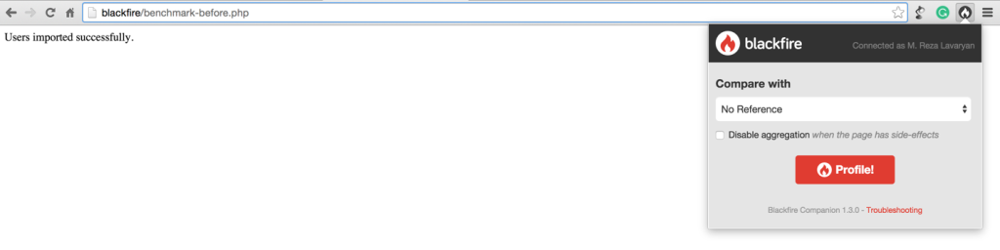
Note: To use Companion Chrome Extension, first, we need to make sure we’re logged into
Blackfire.io.
If everything is properly set up, we should see the Blackfire toolbar at the top of the page.
To see the profile details, we click on
View profile, on the right side of the Blackfire toolbar.
After clicking on
View profile, we’ll be redirected to the web interface, where we can find all the details about this profile
run:

The web interface consists of several parts:
The toolbar contains a summary of the profile information including wall time, I/O time, memory usage, CPU time,
etc. For our first profile, the toolbar contains the following information:

| Wall Time | I/O | CPU Time | SQL Queries |
|-----------|--------|----------|------------------|
| 578 ms | 541 ms | 36.8 ms | 556 s / 1000 rq |
Call Graph Diagram
This section visualizes the execution flow of our code in a graph. Each node in the graph represents a function/method
in our application with the amount of time it took to execute.
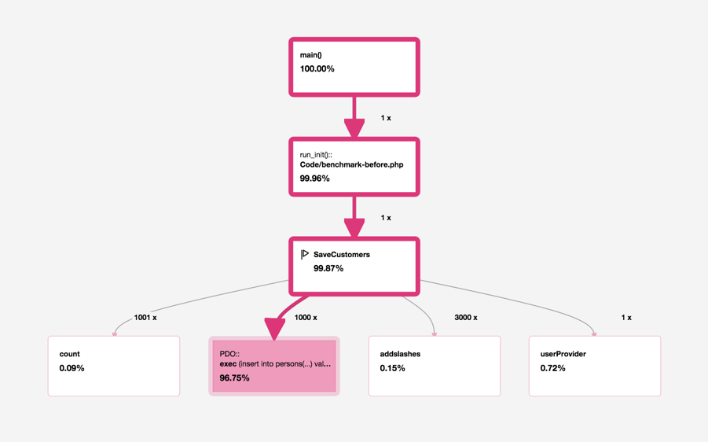
All
nodes in the graph are color-coded. The rule is simple:
The darker this red color is, the more active this node is during each request.
Colored borders show the application’s
hot paths (the parts of our application that were most active during the profile) while the colored
backgrounds show the most
intense nodes. In many cases, hot paths don’t imply a performance bottleneck as some routines normally
do the heavy lifting in our application. However, it is a good place to start when trying to locate the bottlenecks.
By having a quick glance at the graph, we can spot the most active nodes. In our case,
saveCustomers() has used
99.27% (including external calls) of the total time.
PDO::exec (called by
saveCustomers()) is the most intense node in the graph, as we’ve called this method one thousand times
from
saveCustomers(). It has taken
92.56% of the total time spent, according to the graph!
Functions List
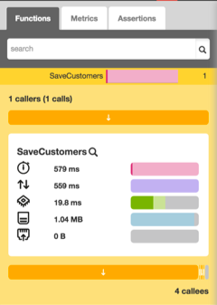
By clicking on each node, we can see all the details about it (on the left panel) including the number of calls and
spent time.
As an example, we click on the
saveCustomers() node. According to the screenshot above, we can see that this function has been called
once (1 caller), and it has four
callees (external function/method calls).
There are also several horizontal bar charts, showing the inclusive/exclusive times for this node in each
dimension (wall time, I/O time, Memory, CPU time, etc.). The darker shade shows the exclusive time while
the lighter shade shows the inclusive time. If we move the mouse over the bars, we can see the time/percentage
for each of these dimensions.
We can also see the
caller(s) of this function by clicking on the button underneath the
1 Callers (1 calls) label.
If we scroll a bit down, we can also see the
callee(s). Above the
4 callees label, there are several buttons next to each other with
different widths. By clicking on each of these buttons, we’ll see the performance information for each
external call from
saveCustomer(). For instance,
userProvider() is one of the callees of
saveCustomers() .

Blackfire Metrics
Blackfire provides some metrics out of the box allowing us to evaluate our application’s performance from other perspectives
as well, like SQL queries, PDO connections, HTTP response size, the number of compiled and executed files, just
to name a few.

These metrics can be used in continuous performance testing. We’ll get to that shortly.
Optimizing the Existing Code
Okay, now let’s do some micro-optimizations on the existing script to improve the performance a bit. In the existing
code, we’re making one database request per entry, meaning 1,000 database interactions during each request. What
if we could reduce this number to only
one request? Consider the following statement:
INSERT INTO persons (name, email, city) VALUES (?, ?, ?),(?, ?, ?),(?, ?, ?),(?, ?, ?)⤶
...(?, ?, ?)
In the above statement, all the values are concatenated as groups of parentheses (separated by commas). This statement
will obviously use more memory, but will be much faster than the existing one. Let’s see it in action:
<?php
$db = new PDO('mysql:host=localhost;dbname=blackfire_tutorial;charset=utf8', ⤶
'homestead', 'secret');
function SaveCustomers($db) {
// Providing data
$users = userProvider();
$params = [];
$num = count($users);
$placeholders = rtrim(str_repeat('(?, ?, ?), ', $num), ', ');
for ($i = 0; $i < $num; $i++) {
$params[] = $users[$i]['name'];
$params[] = $users[$i]['email'];
$params[] = $users[$i]['city'];
}
$q = $db->prepare('INSERT INTO sample_users (name, email, city) VALUES ' ⤶
. $placeholders);
$q->execute($params);
unset($params);
unset($placeholders);
}
function userProvider () {
return json_decode(file_get_contents('data/users.json'), true);
}
//Saving data
saveCustomers($db);
echo 'Users imported successfully.';
We call this file
benchmark-after.php and run it in the browser. Now, we run the profiler again. This time in the
Compare with select box, we choose our reference profile.

When the profiling is done, we click on
View Comparisons to go to the web interface.

As we can see, the web interface is a bit different now since we’re comparing two different profiles. By taking a
quick look at the toolbar, we can see that the wall time has been significantly optimized by
98% (from
578 ms to
14 ms) and the number of database requests is reduced to only one! The memory usage has been increased
by
97% though (2.42 MB).
If the performance has been increased when compared to the reference profile, respective values on the toolbar should
be colored in green. Red means the performance has been reduced (in our case the Memory usage):
| Wall Time | I/O | CPU Time | Memory | SQL Queries |
|-----------|--------|----------|--------|------------------|
| -98% | -98% | -89% | +117% | -99% / -999 rq |
The toolbar’s information in the second profile run displays percentage differences (between the current profile
and the reference). To see the information of the current profile, toggle the
Delta switch in right side of the toolbar:

By looking at the graph, we can also see that the performance has improved. The nodes in this diagram are colored
blue. The negative value in each node means the amount of time we have saved.

In our case
PDO::exec has been impacted most (time reduced by 555 ms). By clicking the node, we can see its details
in the left pane. The performance information of this profile and the reference profile are displayed
side by side.
By clicking on the metric tab, we can see the improvements from other perspectives. For example, in our last profile
run, the
PDO Queries has been reduced to only one.

Well, this wasn’t a lesson in performance tuning, but good enough to scratch the surface of Blackfire.
Using the Command Line Interface
Along with the Companion, Blackfire provides a nifty command line utility called
blackfire allowing us to profile any PHP script including web pages, web services, API calls or command-line
scripts right from the terminal.
Profiling HTTP Requests
To profile a web page from the command line, we use the
curl sub-command followed by the page URL:
blackfire curl http://192.168.10.10/benchmark-before.php
As a result, Blackfire outputs some performance related information along with the URL to the web interface:
Profile URL: https://blackfire.io/profiles/b8fceed1-06be-4a0f-b28f-7841457e0837/graph
Total time: 628 ms
CPU time: 74 ms
I/O: 554 ms
Memory: 1.23 MB
Network: n/a
SQL: 570 ms 1000 rq
To have more precise results, we can take several
samples of the same request by passing the
--sample option, followed by the number of samples that we want. Blackfire takes 10 samples by default
so don’t be surprised if your database table contains 11,000 rows after the first profile run.
blackfire --sample 15 curl http://192.168.10.10/benchmark-before.php
We can also create a new reference profile just the way we did using Companion:
blackfire --new-reference curl http://192.168.10.10/benchmark-before.php
Or compare it against a previously created reference profile. To do this, we pass
--reference followed by the reference profile id:
blackfire --reference=7 curl http://192.168.10.10/benchmark-after.php
The reference profile id is available in the web interface, or as part of the profile output when using
--new-reference option.
Profiling CLI Scripts
By using the
blackfire utility, we can profile any command-line script as well. This is possible via the
run sub-command:
blackfire run php benchmark-before.php
All the options used with the
curl sub-command can also be used with
run.
Another great feature of Blackfire is its continuous performance testing. As mentioned earlier, Blackfire provides
a variety of metrics out of the box which we can use to write performance tests. This feature is only available
to premium users, but it is also available as a two-week trial. Assertions can be on time dimensions or other
dimensions like the number of database requests, memory usage or response size.
All the tests should be in
.blackfire.yml within our project’s root directory.
A Blackfire test is like the following code:
tests:
"Pages should be fast enough":
path: "/benchmark-before.php" # run the assertions for all HTTP requests
assertions:
- "main.wall_time < 100ms" # wall clock time is less than 100ms
As we can see, all the tests should be under the
tests main key.
A test is composed of the following components:
- A name (in the above example:
Pages should be fast enough)
- A regular expression (path) that all HTTP request must
match, for the test to be executed.
- A set of
assertions which consist of
metrics and
assertion values.
Each time the profiler is run for a project containing the
.blackfire.yml file, Blackfire automatically runs all the tests and reflects the result in the web interface
(
Assertion tab in the left panel).

In the above example, the test is run for
benchmark-before.php.
main.wall_time is a Blackfire metric for the total time required to execute the script. In the above assertion,
we check if it’s less than
100ms:
Here’s another example with more assertions from
Blackfire’s documentation:
tests:
"Homepage should not hit the DB":
path: "/" # only apply the assertions for the homepage
assertions:
- "metrics.sql.queries.count == 0" # no SQL statements executed
- "main.peak_memory < 10mb" # memory does not exceed 10mb
- "metrics.output.network_out < 100kb" # response size is less than 100kb
The above test is run for the home page (
/). In the assertions, we make sure that no database request is made on the home page, memory usage does
not exceed
10 MB and the response size is less than
100 KB.
To learn more about assertions, refer to the
Assertion reference.
We can also have
custom metrics in our assertions, which is fully covered in the
documentation.
Note: to validate the tests, we can use Blackfire’s
Validator.
Wrapping Up
Blackfire.io is a powerful web profiler which instruments applications without adding a single line of code.
It consists of five main components: the Probe, The Agent, The Companion, CLI tool and the web interface. The
Probe and the Agent are responsible for instrumenting the code and forwarding the profile results to the Blackfire
server.
We can profile an application either by using Companion or
blackfire command line utility.
Blackfire provides a web interface which visualizes the details of the profile result. We can set a profile as a
reference, and then use that as a performance baseline to compare against future profiles.
Chapter
How to Boost Your Server Performance with Varnish
Tonino Jankov
Varnish Cache is an
HTTP accelerator and
reverse proxy developed by Danish consultant and FreeBSD core developer
Poul-Henning Kamp, along with other developers at Norwegian
Linpro AS. It was
released in 2006.
According to Pingdom.com, a company focused on web performance, in 2012 Varnish was already famous among
the world's top websites for its capacity to speed up web delivery, and it was being used by sites such as
Wired, SlideShare, Zappos, SoundCloud, Weather.com, Business Insider, Answers.com, Urban Dictionary, MacRumors,
DynDNS, OpenDNS, Lonely Planet, Technorati, ThinkGeek and Economist.com.
It is licensed under a two-clause
BSD license. Varnish has a premium tier,
Varnish Plus, focused on enterprise customers, which offers some
extra features, modules, and support.
Although there are other solutions that also
shine, Varnish is still a go-to solution that can dramatically improve website speed, reduce the strain on
the web application server's CPU, and even serve as a
protection layer from DDoS attacks.
KeyCDN recommends deploying it on the origin server stack.
Varnish can sit on a dedicated machine in case of more demanding websites, and make sure that the origin servers
aren't affected by the flood of requests.
At the time of this writing (November 2017), Varnish is at version
5.2.
How It Works
Caching) in general works by keeping the pre-computed outputs of an application in memory, or on the disk,
so that expensive computations don't have to be computed over and over on every request.
Web Cache can be on the client (browser cache), or on the server. Varnish falls into the second category.
It is usually configured so that it listens for requests on the standard HTTP port (80), and then serves the
requested resource to the website visitor.

The first time a certain URL and path are requested, Varnish has to request it from the origin server in order to
serve it to the visitor. This is called a CACHE MISS, which can be read in HTTP response headers, depending on
the Varnish setup.
According to the
docs:
when an object, any kind of content i.e. an image or a page, is not stored in the cache, then we have what is
commonly known as a cache miss, in which case Varnish will go and fetch the content from the web server,
store it and deliver a copy to the user and retain it in cache to serve in response to future requests.
When a particular URL or a resource is cached by Varnish and stored in memory, it can be served directly from server
RAM; it doesn't need to be computed every time. Varnish will start delivering a CACHE HIT in a matter of
microseconds.

This means that neither our origin server or our web application, including its database, are touched by future requests.
They won't even be aware of the requests loaded on cached URLs.
The origin server --- or servers, in case we
use Varnish as a load balancer --- are configured to listen on some non-standard port, like 8888, and Varnish
is
made aware of their address and port.
Varnish Features
Varnish is
threaded. It's been
reported that Varnish was able to handle over 200,000 requests per second on a single instance. If properly
configured, the only bottlenecks of your web app will be network throughput and the amount of RAM. (This shouldn't
be an unreasonable requirement, because it just needs to keep computed web pages in memory, so for most websites,
a couple of gigabytes should be sufficient.)
Varnish is extendable via
VMODS
. These are modules that can use standard C libraries and extend Varnish functionality. There are community-contributed
VMODS listed
here. They range from header manipulation to Lua scripting, throttling of requests, authentication, and so
on.
Varnish has its own domain-specific language,
VCL
. VCL provides comprehensive configurability. With a full-page caching server like Varnish, there are a lot of
intricacies that need to be solved.
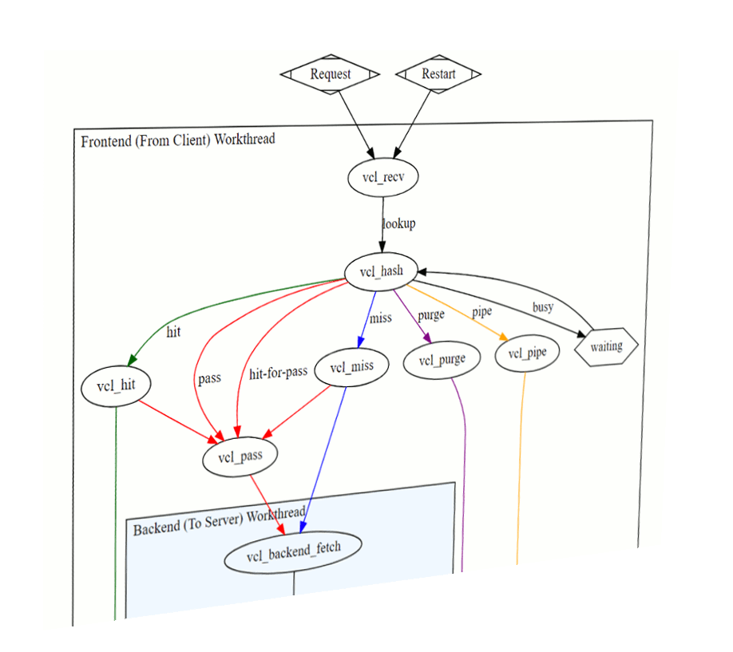
When we cache a dynamic website with dozens or hundreds of pages and paths, with GET query parameters, we'll
want to exclude some of them from cache, or set different cache-expiration rules. Sometimes we'll want to
cache certain Ajax requests, or exclude them from the cache. This varies from project to project, and can't
be tailored in advance.
Sometimes we'll want Varnish to decide what to do with the request depending on request headers. Sometimes we'll
want to pass requests directly to the back end with a certain cookie set.
To quote the
Varnish book,
VCL provides subroutines that allow you to affect the handling of any single request almost anywhere in the execution
chain.
Purging the cache often needs to be done dynamically --- triggered by publishing articles or updating the website.
Purging also needs to be done as atomically as possible --- meaning it should target the smallest possible scope,
like a single resource or path.
This means that specific rules need to be defined, with their order of priority in mind. Some examples can be found
in the Varnish book (which is available to read
online or as a
downloadable PDF).
Varnish has a set of
tools for monitoring and administering the server:
-
There's
varnishtop, which lets us monitor requested URLs and their frequency.
-
varnishncsa can be used to print the
Varnish Shared memory Log (VSL): it dumps everything pointing to a certain domain and subdomains.
-
varnishhist reads the VSL and presents a live histogram showing the distribution of the last number
of requests, giving an overview of server and back-end performance.
-
varnishtest is used to test VCL configuration files and develop VMODS.
-
varnishstat displays statistics about our varnishd instance:

-
varnishlog is used to get data about specific clients and requests.
Varnish Software offers a set of commercial, paid solutions either built on top of Varnish cache, or extending
its usage and helping with monitoring and management:
Varnish Api Engine,
Varnish Extend,
Akamai Connector for Varnish,
Varnish Administration Console (VAC), and
Varnish Custom Statistics (VCS).
Installing Varnish
The Varnish docs
cover installation on various systems. We'll go with Ubuntu 16.04 LTS in this post.
Packagecloud.io has instructions for updating the Ubuntu repositories and installing Varnish version 5:
curl -L https://packagecloud.io/varnishcache/varnish5/gpgkey | sudo apt-key add -
sudo apt-get update
sudo apt-get install -y apt-transport-https
Then we add the following lines to the newly created file
/etc/apt/sources.list.d/varnishcache_varnish5.list:
deb https://packagecloud.io/varnishcache/varnish5/ubuntu/ xenial main
deb-src https://packagecloud.io/varnishcache/varnish5/ubuntu/ xenial main
Then we run:
sudo apt-get update
sudo apt-get install varnish
We can test a brand-new WordPress installation running on Nginx. First, we change Nginx's default listening port
from 80 to 8080 --- which is the port Varnish expects the back end to be running on --- by adding the following
lines to the Nginx virtual host, inside the server clause:
server {
listen 127.0.0.1:8080 default_server;
listen [::]:8080 default_server;
Then we configure Varnish: we edit
/etc/default/varnish, replacing port 6081 with 80 (the default web port):
DAEMON_OPTS="-a :80 \
-T localhost:6082 \
-f /etc/varnish/default.vcl \
-S /etc/varnish/secret \
-s malloc,256m"
We also need to change
/lib/systemd/system/varnish.service, making the same replacement:
[Service]
Type=simple
LimitNOFILE=131072
LimitMEMLOCK=82000
ExecStart=/usr/sbin/varnishd -j unix,user=vcache -F -a :80 -T localhost:6082 ⤶
-f /etc/varnish/default.vcl -S /etc/varnish/secret -s malloc,256m
ExecReload=/usr/share/varnish/reload-vcl
ProtectSystem=full
ProtectHome=true
PrivateTmp=true
PrivateDevices=true
Then we restart Nginx and Varnish:
sudo service nginx restart
sudo /etc/init.d/varnish restart
Warning: due to some peculiarities, Varnish usually must be restarted --- or started this way, not with
service varnish start --- in order to read all the config files we edited.
We tested the website speed and responsiveness with
Locust and
Pingdom Tools.
Once the cache was warmed up, the difference was impressive, despite Nginx being well known for its speed:
the average number of requests per second was multiplied by three to four times, and response time were
greatly reduced. Load times were a bit higher due to network latency, since we tested the website hosted in California
from a workstation in Europe.
Locust results for Nginx:
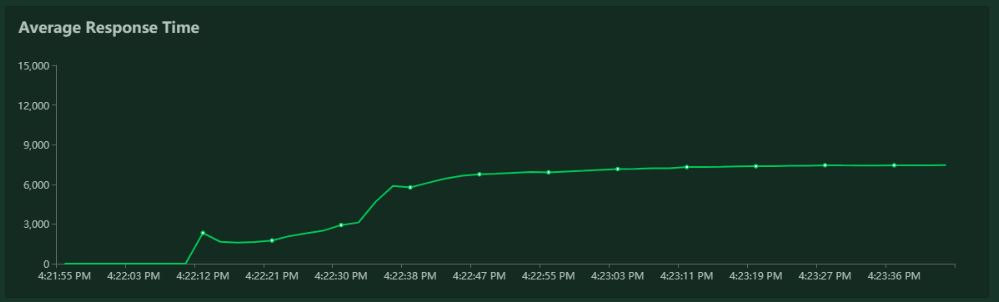
Locust results for Nginx + Varnish:

Pingdom results were also good.
Pingdom results for Nginx stack, tested from California:

Pingdom results for Nginx + Varnish, California:

Notice also the
TTFB for each case.
Nginx alone:

Nginx + Varnish:
Even if we neglect the pink part, which is the DNS lookup, there is still an obvious difference.
Simplicity of Setup
Varnish doesn't care what's listening on port 8080 (we can change this default port as well, if required).
This means that setting up Apache, or some other application server, should be just as straightforward: all we
need to do is to configure them to listen on port 8080 instead of 80.
Setting up Varnish with NodeJS
On our existing server, where we had already installed Varnish, setting up a hello-world Node app was just as simple.
We installed the
nodejs and
npm packages and linked NodeJS to Node:
ln -s /usr/bin/nodejs /usr/bin/node
Then we created a simple node
hello-world program listening on port 8080:
#!/usr/bin/env nodejs
var http = require('http');
http.createServer(function (req, res) {
res.writeHead(200, {'Content-Type': 'text/plain'});
res.end('Hello World\n');
}).listen(8080, 'localhost');
console.log('Server running at http://localhost:8080/');
Then we installed Node's package manager,
PM2, to be able to daemonize our app:
sudo npm install -g pm2
pm2 start index.js
aAnd voila --- our Node app was being served by Varnish:

Other Tips
To be able to control whether or not our request is being cached in our browser inspector, we ought to add the following
snippet to our Varnish config file, into the
sub vcl_deliver block:
sub vcl_deliver {
if (obj.hits > 0) {
set resp.http.X-Cache = "HIT";
} else {
set resp.http.X-Cache = "MISS";
}
}
Then we can see the feedback in our response headers as
HIT or MISS:

One more warning: Varnish (or at least the open-source version)
doesn't support SSL, reiterated
again by its creator Poul-Henning Kamp (who is
not shy to voice his opinions). So when you need to use Varnish and HTTPS, consider using another proxy in
front of it for
SSL termination --- such as
haproxy, or Varnish's own
hitch.
Or, if that's getting too involved, just use
Nginx and FastCGI Cache.
Conclusion
In this article we tried to give a brief introduction to Varnish Cache without going too deeply into its setup, monitoring
and administration.
Tuning server performance is a science of its own, and presenting the full scope of use cases and setups requires
another article. I'll be diving a bit deeper into this subject in another article, so stay tuned for a future
installment, where I'll add Varnish in front of a real app.
Chapter
How to Process Server Logs
Daniel Berman
When things go south with our applications -- as they sometimes do, whether we like it or not -- our log files are
normally among the first places where we go when we start the troubleshooting process. The big “but” here is
that despite the fact that log files contain a wealth of helpful information about events, they are usually extremely
difficult to decipher.
A modern web application environment consists of multiple log sources, which collectively output thousands of log
lines written in unintelligible machine language. If you, for example, have a LAMP stack set up, then you have
PHP, Apache, and MySQL logs to go through. Add system and environment logs into the fray -- together with framework-specific
logs such as Laravel logs -- and you end up with an endless pile of machine data.
Talk about a needle in a haystack.

The ELK Stack (
Elasticsearch,
Logstash, and
Kibana) is quickly becoming the most popular way to handle this challenge. Already the most popular open-source
log analysis platform -- with 500,000 downloads a month, according to Elastic -- ELK is a great way to centralize
logs from multiple sources, identify correlations, and perform deep-data analysis.
Elasticsearch is a search-and-analytics engine based on Apache Lucene that allows users to search and analyze large
amounts of data in almost real time. Logstash can ingest and forward logs from anywhere to anywhere. Kibana is
the stack’s pretty face -- a user interface that allows you to query, visualize, and explore Elasticsearch data
easily.
This article will describe how to set up the ELK Stack on a local development environment, ship web server logs (Apache
logs in this case) into Elasticsearch using Logstash, and then analyze the data in Kibana.
Installing Java
The ELK Stack requires Java 7 and higher (only Oracle’s Java and the OpenJDK are supported), so as an initial step,
update your system and run the following:
sudo apt-get install default-jre
Installing ELK
There are numerous ways of installing the ELK Stack -- you can use Docker, Ansible, Vagrant, Microsoft Azure, AWS,
or a hosted ELK solution -- just take your pick. There is a vast number of tutorials and guides that will help
you along the way, one being this
ELK Stack guide that we at
Logz.io put together.
Installing Elasticsearch
We’re going to start the installation process with installing Elasticsearch. There are various ways of setting up
Elasticsearch but we will use Apt.
First, download and install Elastic’s public signing key:
wget -qO - https://packages.elastic.co/GPG-KEY-elasticsearch | sudo apt-key add -
Next, save the repository definition to
/etc/apt/sources.list.d/elasticsearch-2.x.list:
echo "deb http://packages.elastic.co/elasticsearch/2.x/debian stable main" | sudo tee -a /etc/apt/sources.list.d/elasticsearch-2.x.list
Last but not least, update the repository cache and install Elasticsearch:
sudo apt-get update && sudo apt-get install elasticsearch
Elasticsearch is now installed. Before we continue to the next components, we’re going to tweak the configuration
file a bit:
sudo nano /etc/elasticsearch/elasticsearch.yml
Some common configurations involve the restriction of external access to Elasticsearch, so data cannot be hacked
or deleted via HTTP API:
network.host: localhost
You can now restart Elasticsearch:
sudo service elasticsearch restart
To verify that Elasticsearch is running properly, query the following URL using the cURL command:
sudo curl 'http://localhost:9200'
You should see the following output in your terminal:
{
"name" : "Jebediah Guthrie",
"cluster_name" : "elasticsearch",
"version" : {
"number" : "2.3.1",
"build_hash" : "bd980929010aef404e7cb0843e61d0665269fc39",
"build_timestamp" : "2016-04-04T12:25:05Z",
"build_snapshot" : false,
"lucene_version" : "5.5.0"
},
"tagline" : "You Know, for Search"
}
To make the service start on boot, run:
sudo update-rc.d elasticsearch defaults 95 10
Installing Logstash
Logstash, the "L" in the "ELK Stack", is used at the beginning of the log pipeline, ingesting
and collecting data before sending it on to Elasticsearch.
To install Logstash, add the repository definition to your
/etc/apt/sources.list file:
echo "deb http://packages.elastic.co/logstash/2.2/debian stable main" | sudo tee -a /etc/apt/sources.list
Update your system so that the repository will be ready for use and then install Logstash:
sudo apt-get update && sudo apt-get install logstash
We’ll be returning to Logstash later to configure log shipping into Elasticsearch.
Installing Kibana
The final piece of the puzzle is Kibana - the ELK Stack's pretty face. First, create the Kibana source list:
echo "deb http://packages.elastic.co/kibana/4.5/debian stable main" | sudo tee -a /etc/apt/sources.list
Then, update and install Kibana:
sudo apt-get update && apt-get install kibana
Configure the Kibana configuration file at
/opt/kibana/config/kibana.yml:
sudo vi /opt/kibana/config/kibana.yml
Uncomment the following lines:
server.port: 5601
server.host: “0.0.0.0”
Last but not least, start Kibana:
sudo service kibana start
You can access Kibana in your browser at
http://localhost:5601/ (change the URL if you're using a VM like
Homestead Improved to whichever host/port you configured):
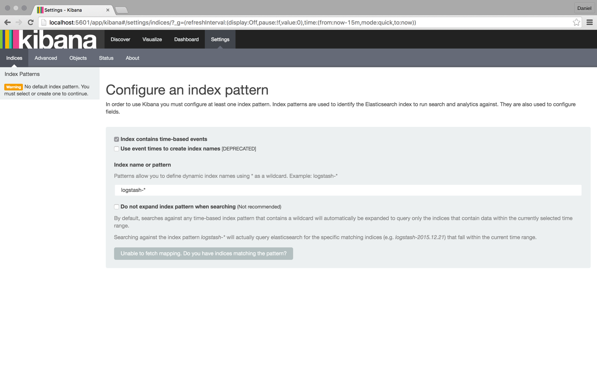
To start analyzing logs in Kibana, at least one index pattern needs to be defined. An index is how Elasticsearch
organizes data, and it can be compared to a database in the world of RDBMS, with mapping defining multiple types.
You will notice that since we have not yet shipped any logs, Kibana is unable to fetch mapping (as indicated by the
grey button at the bottom of the page). We will take care of this in the next few steps.
Tip: By default, Kibana connects to the Elasticsearch instance running on localhost, but you can connect
to a different Elasticsearch instance. Simply modify the Elasticsearch URL in the Kibana configuration file that
you had edited earlier and then restart Kibana.
Shipping Logs
Our next step is to set up a log pipeline into Elasticsearch for indexing and analysis using Kibana. There are various
ways of forwarding data into Elasticsearch, but we’re going to use Logstash.
Logstash configuration files are written in JSON format and reside in
/etc/logstash/conf.d. The configuration consists of three plugin sections: input, filter, and output.
Create a configuration file called
apache-logs.conf:
sudo vi /etc/logstash/conf.d/apache-logs.conf
Our first task is to configure the input section, which defines where data is being pulled from.
In this case, we’re going to define the path to our Apache access log, but you could enter a path to any other set
of log files (e.g. the path to your PHP error logs).
Before doing so, however, I recommend doing some research into supported input plugins and how to define them.
In some cases, other log forwarders such as
Filebeat and
Fluentd are recommended.
The input configuration:
input {
file {
path => "/var/log/apache2/access.log"
type => "apache-access"
}
}
Our next task is to configure a filter.
Filter plugins allow us to take our raw data and try to make sense of it. One of these plugins is grok -- a plugin
used to derive structure out of unstructured data. Using grok, you can define a search and extract part of your
log lines into structured fields.
filter {
if [type] == "apache-access" {
grok {
match => { "message" => "%{COMBINEDAPACHELOG}" }
}
}
}
The last section of the Logstash configuration file is the Output section, which defines the location to where the
logs are sent. In our case, it is our local Elasticsearch instance on our localhost:
output {
elasticsearch {}
}
That’s it. Once you’re done, start Logstash with the new configuration:
/opt/logstash/bin/logstash -f /etc/logstash/conf.d/apache-logs.conf
You should see the following JSON output from Logstash indicating that all is in order:
{
"message" => "127.0.0.1 - - [24/Apr/2016:11:41:59 +0000] \"GET / HTTP/1.1\" 200 11764 \"-\" \"curl/7.35.0\"",
"@version" => "1",
"@timestamp" => "2016-04-24T11:43:34.245Z",
"path" => "/var/log/apache2/access.log",
"host" => "ip-172-31-46-40",
"type" => "apache-access",
"clientip" => "127.0.0.1",
"ident" => "-",
"auth" => "-",
"timestamp" => "24/Apr/2016:11:41:59 +0000",
"verb" => "GET",
"request" => "/",
"httpversion" => "1.1",
"response" => "200",
"bytes" => "11764",
"referrer" => "\"-\"",
"agent" => "\"curl/7.35.0\""
}
Refresh Kibana in your browser, and you’ll notice that the index pattern for our Apache logs was identified:

Click the
Create button, and then select the Discover tab:

From this point onwards, Logstash is tailing the Apache access log for messages so that any new entries will be forwarded
into Elasticsearch.
Analyzing Logs
Now that our pipeline is up and running, it’s time to have some fun.
To make things a bit more interesting, let’s simulate some noise on our web server. To do this I’m going to download
some
sample Apache logs and insert them into the Apache access log. Logstash is already tailing this log, so these
messages will be indexed into Elasticsearch and displayed in Kibana:
wget http://logz.io/sample-data
sudo -i
cat /home/ubuntu/sample-data >> /var/log/apache2/access.log
exit

Searching
Searching is the bread and butter of the ELK Stack, and it’s an art unto itself. There is a large amount of documentation
available online, but I thought I’d cover the essentials so that you will have a solid base from which to start
your exploration work.
Let’s start with some simple searches.
The most basic search is the “free text” search that is performed against all indexed fields. For example, if you’re
analyzing web server logs, you could search for a specific browser type (searching is performed using the wide
search box at the top of the page):
Chrome
It’s important to note that free text searches are NOT case-sensitive unless you use double quotes, in which case
the search results show exact matches to your query.
“Chrome”
Next up are the field-level searches.
To search for a value in a specific field, you need to add the name of the field as a prefix to the value:
type:apache-access
Say, for example, that you’re looking for a specific web server response. Enter
response:200 to limit results to those containing that response.
You can also search for a range within a field. If you use brackets [], the results will be inclusive. If you use
curly braces {}, the results will exclude the specified values in the query.
Now, it’s time to take it up a notch.
The next types of searches involve using logical statements. These are quite intuitive but require some finesse because
they are extremely syntax-sensitive.
These statements include the use of the Boolean operators AND, OR, and NOT:
type:apache-access AND (response:400 OR response:500)
In the above search, I’m looking for Apache access logs with only a 400 or 500 response. Note the use of parentheses
as an example of how more complex queries can be constructed.
There are many more search options available (I recommend referring to Logz.io's
Kibana tutorial for more information) such as regular expressions, fuzzy searches, and proximity searches,
but once you’ve pinpointed the required data, you can save the search for future reference and as the basis to
create Kibana visualizations.
Visualizing
One of the most prominent features in the ELK Stack in general and Kibana in particular is the ability to create
beautiful visualizations with the ingested data. These visualizations can then be aggregated into a dashboard
that you can use to get a comprehensive view of all the various log files coming into Elasticsearch.
To create a visualization, select the Visualize tab in Kibana:
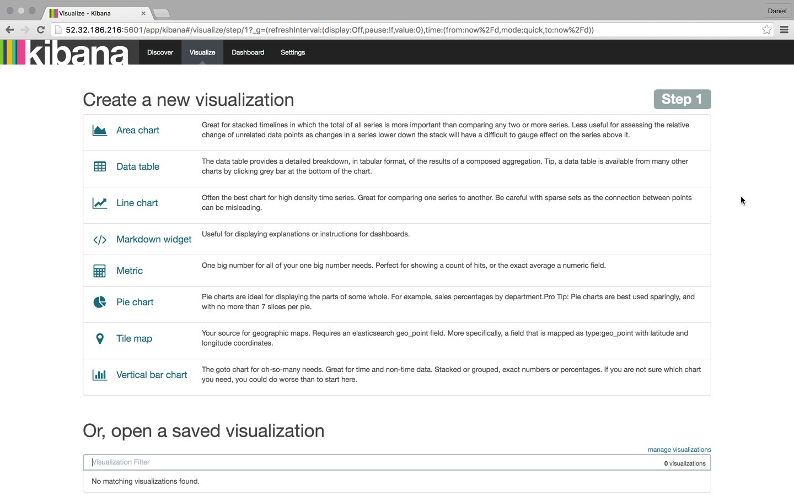
There are a number of visualization types that you can select, and which type you will choose will greatly depend
on the purpose and end-result you are trying to achieve. In this case, I’m going to select the good ol’ pie chart.
We then have another choice -- we can create the visualization from either a saved search or a new search. In this
case, we’re going with the latter.
Our next step is to configure the various metrics and aggregations for the graph’s X and Y axes. In this case, we’re
going to use the entire index as our search base (by not entering a search query in the search box) and then
cross reference the data with browser type: Chrome, Firefox, Internet Explorer, and Safari:
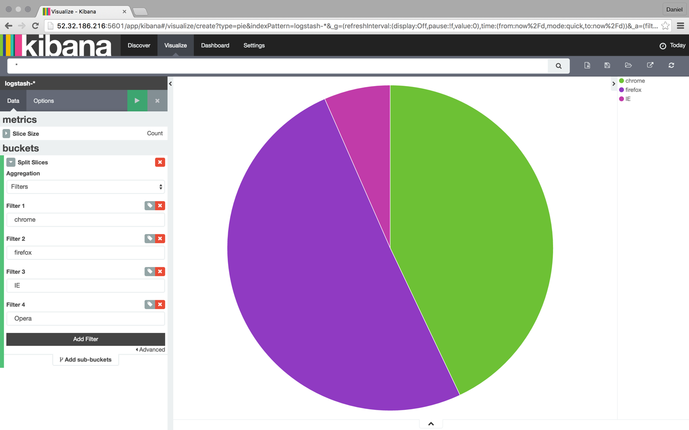
Once you are finished, save the visualization. You can then add it to a custom dashboard in the Dashboard tab in
Kibana.
Visualizations are incredibly rich tools to have, and they are the best way to understand the trends within your
data.
Conclusion
The ELK Stack is becoming THE way to analyze and manage logs. The fact that the stack is open source and that it’s
backed by a strong community and a fast growing ecosystem is driving its popularity.
DevOps is not the sole realm of log analysis, and ELK is being used by developers, sysadmins, SEO experts, and marketers
as well. Log-driven development -- the development process in which code is monitored using metrics, alerts,
and logs -- is gaining traction within more and more R&D teams, and it would not be a stretch of the imagination
to tie this to the growing popularity of ELK.
Of course, no system is perfect and there are pitfalls that users need to avoid, especially when handling big production
operations. But this should not deter you from trying it out, especially because there are numerous sources of
information that will guide you through the process.
Good luck, and happy indexing!
This article was
peer reviewed by
Christopher Thomas,
Younes Rafie, and
Scott Molinari. Thanks to all of SitePoint’s peer reviewers for making SitePoint content the best it
can be!
Chapter
Web App Performance Testing with Siege: Plan, Test, Learn
Zoran Antolovic
This article was peer reviewed by
Ivan Enderlin and
Wern Ancheta. Thanks to all of SitePoint’s peer reviewers for making SitePoint content the best it can
be!
Building a simple web application today isn’t that hard. The web development community is friendly, and there
are lots of discussions on Stack Overflow or similar platforms, and various sites with
lessons and tutorials.
Almost anyone can
build an app locally, deploy it to a server, and proudly show it to your friends. I hope you’ve already done
all of this, and your project went viral, so you’re obviously here because you want to learn how to make sure
your app is ready for some high traffic.
If we think about a web app as a black box, things are quite simple: the app waits for a request, processes it, and
returns the response presentation of a resource (HTML, JSON, XML, etc.). One could think: “Yeah, that’s simple,
we should be able to scale our app with ease.” Sadly, the world of web development ain't all sunshine and
rainbows, and you’ll encounter a lot of performance issues while your traffic grows! You'll learn and improve
both your skills and the app over time. In this article, designed to speed this process up, I'll cover the
basic concepts of testing the app (regression, load, and stress testing) with
Siege and some tips and tricks I like to use when I’m testing my own web apps.

The Types of Testing
Let’s say we want to achieve the daily goal of 1 million unique users. How should we prepare for that amount of traffic?
How do we make sure nothing will break under normal traffic or peaks? This type of testing is called
load testing, since we know exactly how much traffic we want our app to endure --- the load. If you want
to push your app to its limits and beyond until it breaks, you’re
stress testing your app.
In addition to those, are you aware of how code changes you’ve deployed might affect performance? One simple update
can degrade or improve the performance of a high traffic web app to a large extent, and you won’t even know what
happened or why until the storm is over. To make sure an app is performing the same before and after a change,
we’re doing
regression testing.
Another great motivation for regression testing is infrastructure change: for whatever reason, you might want to
move from provider A to provider B (or switch from Apache to nginx). You know that your app is usually handling
N requests per minute (on average) and what its normal traffic is (a quick look at analytics would do the job).
You’re expecting that your app will behave the same (or better) once deployed provider B's server. Are you
sure, though? Would you take that risk? You already have all the data you need, don’t guess! Test your new setup
before deploying and sleep better!
Before you start randomly hitting your app with virtual requests, you should know that testing is not an easy job,
and the numbers you’ll get from Siege or any other testing tool should be used
as a reference to analyze relative changes. Running both Siege and the app locally for five minutes
and concluding your app can handle a few hundred or thousand requests within a few seconds is not something I’d
recommend.
The Steps for Successful Testing
-
Plan
Think about what you want to test. and what you expect. How much traffic, on which URLs, with what payload?
Define parameters up front, don’t just randomly hit your app.
-
Prepare
Make sure your environments are as isolated as possible: use the same environment for testing, for every
test run. A good guide on how to accomplish this can be found in
this book about setting up PHP environments.
-
Analyze and Learn
Learn something from the numbers and make educated decisions. Results should always be evaluated within their
context: don’t jump to conclusions; check everything at least twice.
Getting Started with Siege
Siege is an awesome tool for benchmarking and testing web apps. It simulates concurrent users requesting
resources at a given URL (or multiple URLs) and lets the user heavily customize the testing parameters. Run
siege --help to see all available options; we’ll cover some of them in detail below.
Preparing the Test App
With Siege, you can test an app's stability, performance, and improvements between code (or infrastructure) changes.
You can also use it to make sure your Wordpress website can handle the peak you’re expecting after publishing
a viral photo of a cat, or to set up and evaluate the benefits of an
HTTP cache system such as Varnish.
For the tests in this article, I'll be using a slightly modified
Symfony Demo application deployed to one Digital Ocean node in Frankfurt, and SIEGE 4.0.2 installed on a
second Digital Ocean node in New York.
As I said earlier, it’s crucial to have both the app and test server isolated whenever possible. If you’re running
any of them on your local machine, you can’t guarantee the same environment because there are other processes
(email client, messaging tools, daemons) running which may affect performance; even with high quality virtual
machines like
Homestead Improved, resource availability isn't 100% guaranteed (though these isolated VMs are a valid
option if you don't feel like spending money on the load testing phase of your app).
The Symfony Demo application is pretty simple and fast when used out of the box. In real life, we’re dealing with
complex and slow apps, so I decided to add two modules to the sidebar of a single post page:
Recent posts (10 latest posts) and
Popular posts (10 posts with most comments). By doing so, I’ve added more complexity to the app which
is now querying the DB at least three times. The idea is to get as real a situation as possible. The database
has been populated with 62,230 dummy articles and ~1,445,505 comments.
Learning the Basics
Running the command
siege SOME-URL will make Siege start testing the URL with default parameters. After the initial message
…
** Preparing 25 concurrent users for battle.
The server is now under siege…
… the screen will start to fill with information about sent requests. Your immediate reflex would probably be to
stop execution by pressing
CTRL + C, at which point it will stop testing and give output results.
Before we go on, there is one thing you should keep in mind when testing/benchmarking a web app. Think about the
lifecycle of a single HTTP request sent towards the Symfony demo app blog page ---
/en/blog/. The server will generate an HTTP response with a status 200 (OK) and HTML in the body with
content and references to images and other assets (stylesheets, JavaScript files, …). The web browser processes
those references, and requests all assets needed to render a web page in the background. How many HTTP requests
in total do we need?
To get the answer, let's ask Siege to run a single test and analyze the result. I’m having my app's access
log open (
tail -f var/logs/access.log) in the terminal as I run
siege -c=1 --reps=1 http://sfdemo.loc/en/blog/. Basically, I’m telling Siege: “Run test once (--reps=1)
with one user (-c=1) for URL
http://sfdemo.loc/en/blog/”. I can see the requests in both the log and Siege's output.
siege -c=1 --reps=1 http://sfdemo.loc/en/blog/
** Preparing 1 concurrent users for battle.
The server is now under siege...
HTTP/1.1 200 1.85 secs: 22367 bytes ==> GET /en/blog/
HTTP/1.1 200 0.17 secs: 2317 bytes ==> GET /js/main.js
HTTP/1.1 200 0.34 secs: 49248 bytes ==> GET /js/bootstrap-tagsinput.min.js
HTTP/1.1 200 0.25 secs: 37955 bytes ==> GET /js/bootstrap-datetimepicker.min.js
HTTP/1.1 200 0.26 secs: 21546 bytes ==> GET /js/highlight.pack.js
HTTP/1.1 200 0.26 secs: 37045 bytes ==> GET /js/bootstrap-3.3.7.min.js
HTTP/1.1 200 0.44 secs: 170649 bytes ==> GET /js/moment.min.js
HTTP/1.1 200 0.36 secs: 85577 bytes ==> GET /js/jquery-2.2.4.min.js
HTTP/1.1 200 0.16 secs: 6160 bytes ==> GET /css/main.css
HTTP/1.1 200 0.18 secs: 4583 bytes ==> GET /css/bootstrap-tagsinput.css
HTTP/1.1 200 0.17 secs: 1616 bytes ==> GET /css/highlight-solarized-light.css
HTTP/1.1 200 0.17 secs: 7771 bytes ==> GET /css/bootstrap-datetimepicker.min.css
HTTP/1.1 200 0.18 secs: 750 bytes ==> GET /css/font-lato.css
HTTP/1.1 200 0.26 secs: 29142 bytes ==> GET /css/font-awesome-4.6.3.min.css
HTTP/1.1 200 0.44 secs: 127246 bytes ==> GET /css/bootstrap-flatly-3.3.7.min.css
Transactions: 15 hits
Availability: 100.00 %
Elapsed time: 5.83 secs
Data transferred: 0.58 MB
Response time: 0.37 secs
Transaction rate: 2.57 trans/sec
Throughput: 0.10 MB/sec
Concurrency: 0.94
Successful transactions: 15
Failed transactions: 0
Longest transaction: 1.85
Shortest transaction: 0.16
The access log looks like this:
107.170.85.171 - - [04/May/2017:05:35:15 +0000] "GET /en/blog/ HTTP/1.1" 200 22701 "-" "Mozilla/5.0 (unknown-x86_64-linux-gnu) Siege/4.0.2"
107.170.85.171 - - [04/May/2017:05:35:17 +0000] "GET /js/main.js HTTP/1.1" 200 2602 "-" "Mozilla/5.0 (unknown-x86_64-linux-gnu) Siege/4.0.2"
107.170.85.171 - - [04/May/2017:05:35:17 +0000] "GET /js/bootstrap-tagsinput.min.js HTTP/1.1" 200 49535 "-" "Mozilla/5.0 (unknown-x86_64-linux-gnu) Siege/4.0.2"
107.170.85.171 - - [04/May/2017:05:35:17 +0000] "GET /js/bootstrap-datetimepicker.min.js HTTP/1.1" 200 38242 "-" "Mozilla/5.0 (unknown-x86_64-linux-gnu) Siege/4.0.2"
107.170.85.171 - - [04/May/2017:05:35:18 +0000] "GET /js/highlight.pack.js HTTP/1.1" 200 21833 "-" "Mozilla/5.0 (unknown-x86_64-linux-gnu) Siege/4.0.2"
107.170.85.171 - - [04/May/2017:05:35:18 +0000] "GET /js/bootstrap-3.3.7.min.js HTTP/1.1" 200 37332 "-" "Mozilla/5.0 (unknown-x86_64-linux-gnu) Siege/4.0.2"
107.170.85.171 - - [04/May/2017:05:35:18 +0000] "GET /js/moment.min.js HTTP/1.1" 200 170938 "-" "Mozilla/5.0 (unknown-x86_64-linux-gnu) Siege/4.0.2"
107.170.85.171 - - [04/May/2017:05:35:19 +0000] "GET /js/jquery-2.2.4.min.js HTTP/1.1" 200 85865 "-" "Mozilla/5.0 (unknown-x86_64-linux-gnu) Siege/4.0.2"
107.170.85.171 - - [04/May/2017:05:35:19 +0000] "GET /css/main.css HTTP/1.1" 200 6432 "-" "Mozilla/5.0 (unknown-x86_64-linux-gnu) Siege/4.0.2"
107.170.85.171 - - [04/May/2017:05:35:19 +0000] "GET /css/bootstrap-tagsinput.css HTTP/1.1" 200 4855 "-" "Mozilla/5.0 (unknown-x86_64-linux-gnu) Siege/4.0.2"
107.170.85.171 - - [04/May/2017:05:35:19 +0000] "GET /css/highlight-solarized-light.css HTTP/1.1" 200 1887 "-" "Mozilla/5.0 (unknown-x86_64-linux-gnu) Siege/4.0.2"
107.170.85.171 - - [04/May/2017:05:35:20 +0000] "GET /css/bootstrap-datetimepicker.min.css HTTP/1.1" 200 8043 "-" "Mozilla/5.0 (unknown-x86_64-linux-gnu) Siege/4.0.2"
107.170.85.171 - - [04/May/2017:05:35:20 +0000] "GET /css/font-lato.css HTTP/1.1" 200 1020 "-" "Mozilla/5.0 (unknown-x86_64-linux-gnu) Siege/4.0.2"
107.170.85.171 - - [04/May/2017:05:35:20 +0000] "GET /css/font-awesome-4.6.3.min.css HTTP/1.1" 200 29415 "-" "Mozilla/5.0 (unknown-x86_64-linux-gnu) Siege/4.0.2"
107.170.85.171 - - [04/May/2017:05:35:20 +0000] "GET /css/bootstrap-flatly-3.3.7.min.css HTTP/1.1" 200 127521 "-" "Mozilla/5.0 (unknown-x86_64-linux-gnu) Siege/4.0.2"
We can see that even though we told Siege to test the URL once, 15 transactions (requests) were executed. If you’re
wondering what a transaction is, you should check out
the GitHub page:
A transaction is characterized by the server opening a socket for the client, handling a request, serving data
over the wire and closing the socket upon completion.
Siege thus won’t only send a single HTTP GET request for the URL provided, it will generate HTTP GET requests for
all related assets referenced by the resource at the given URL. We should still be aware that Siege isn’t evaluating
JavaScript, therefore AJAX requests aren’t included here. We should also keep in mind that browsers are capable
of caching static files (images, fonts, JS files).
This behavior can be changed since
version 4.0 by updating the Siege configuration file located at
~/.siege/siege.conf and setting
parser = false.
Note: Default behavior may be different depending on the version of Seige you’re using, or even
on the tool. If you’re using something other than Siege, check what exactly it considers to be a single test
(is it single request for given URL, or a request for a given URL and sub-requests for all its resources?)
before you come to conclusions.
From the test output above, we can see that Siege has generated 15 requests (transactions) in ~6 seconds, resulting
in 0.58 MB of transferred data with 100% availability or 15/15 successful transactions - “
Successful transactions is the number of times the server returned a code less than 400. Accordingly, redirects
are considered successful transactions”.
Response time is the average time needed to complete all requests and get responses. Transaction rate and throughput
are telling us what the capacity of our app is (how much traffic our app can handle at a given time).
Let’s repeat the test with 15 users:
siege --concurrent=15 --reps=1 sfdemo.loc/en/blog/
Transactions: 225 hits
Availability: 100.00 %
Elapsed time: 6.16 secs
Data transferred: 8.64 MB
Response time: 0.37 secs
Transaction rate: 36.53 trans/sec
Throughput: 1.40 MB/sec
Concurrency: 13.41
Successful transactions: 225
Failed transactions: 0
Longest transaction: 1.74
Shortest transaction: 0.16
By increasing the test load, we’re allowing our app to show its full power. We can see that our app can handle a
single request from 15 users on a blog page very well, with an average response time of 0.37 seconds. Siege by
default delays requests randomly in the interval from 1 to 3 seconds. By setting the
--delay=N parameter, we can affect the randomness of delays between requests (setting the maximum delay).
Concurrency
Concurrency is probably the most confusing result attribute, so let's explain it. The documentation says:
Concurrency is an average number of simultaneous connections, a number which rises as server performance decreases.
From the
FAQ section, we can see how concurrency is calculated:
Concurrency is the total transactions divided by total elapsed time. So if we completed 100 transactions in 10
seconds, our concurrency was 10.00.
Another great explanation of concurrency is available on the
official website:
We can illustrate this point with an obvious example. I ran Siege against a two-node clustered website. My concurrency
was
6.97. Then I took a node away and ran the same run against the same page. My concurrency rose to
18.33. At the same time, my elapsed time was extended
65%.
Let’s look at it from a different perspective: if you’re a restaurant owner aiming to measure business performance
before doing some changes, you could measure the
average number of open orders (i.e. orders waiting to be delivered --- requests) over time. In the first
example above, an average nu
mber of open orders was
7, but if you fire half of your kitchen staff (i.e. take a node away), your concurrency will rise to
18. Remember, we’re expecting tests to be conducted in an identical environment, so the number of guests
and intensity of ordering should be the same. Waiters can accept orders at a high rate (like web servers can)
but processing time is slow, and your kitchen staff (your app) is overloaded and sweating to deliver orders.
To get a real overview of our app’s performance, I'll run Siege for 5 minutes with a different number of concurrent
users and compare the results. Since the blog home page is a simple endpoint with a single database query, I'll
be testing single post pages in the following tests as they are slower and more complex.
siege --concurrent=5 --time=5M http://sfdemo.loc/en/blog/posts/vero-iusto-fugit-sed-totam.\`
While tests are running, I can take a look at
top on my app's server to see the status. MySQL is working hard:
%CPU %MEM TIME+ COMMAND
96.3 53.2 1:23.80 mysqld
That was expected, since every time the app renders a single post page, it’s executing several non-trivial DB queries:
- Fetch article with associated comments.
- Fetch top 10 posts sorted descending by publication time.
- A
SELECT query with a join between posts and the large comments table with
COUNT to get the 10 most popular articles.
The first test with five concurrent users is done, and the numbers aren’t that impressive:
siege --concurrent=5 --time=5M http://sfdemo.loc/en/blog/posts/vero-iusto-fugit-sed-totam.
Transactions: 1350 hits
Availability: 100.00 %
Elapsed time: 299.54 secs
Data transferred: 51.92 MB
Response time: 1.09 secs
Transaction rate: 4.51 trans/sec
Throughput: 0.17 MB/sec
Concurrency: 4.91
Successful transactions: 1350
Failed transactions: 0
Longest transaction: 15.55
Shortest transaction: 0.16
Siege was able to get 1350 transactions complete in 5 minutes. Since we have 15 transactions/page load, we can easily
calculate that our app was able to handle 90 page loads within 5 minutes or 18 page loads / 1 minute or
0,3 page loads / second. We calculate the same by dividing the transaction rate with a number of transactions
per page 4,51 / 15 = 0,3.
Well… that’s not such a great throughput, but at least now we know where the bottlenecks are (DB queries) and we
have reference to compare with once we optimize our app.
Let’s run a few more tests to see how our app works under more pressure. This time we have the concurrent users set
to 10 and within the first few minutes of testing we can see lots of HTTP 500 errors: the app started to fall
apart under slightly bigger traffic. Let’s now compare how the app is performing under siege with 5, 10 and 15
concurrent users.
siege --concurrent=10 --time=5M http://sfdemo.loc/en/blog/posts/vero-iusto-fugit-sed-totam.
Lifting the server siege…
Transactions: 450 hits
Availability: 73.89 %
Elapsed time: 299.01 secs
Data transferred: 18.23 MB
Response time: 6.17 secs
Transaction rate: 1.50 trans/sec
Throughput: 0.06 MB/sec
Concurrency: 9.29
Successful transactions: 450
Failed transactions: 159
Longest transaction: 32.68
Shortest transaction: 0.16
siege --concurrent=10 --time=5M http://sfdemo.loc/en/blog/posts/vero-iusto-fugit-sed-totam.
Transactions: 0 hits
Availability: 0.00 %
Elapsed time: 299.36 secs
Data transferred: 2.98 MB
Response time: 0.00 secs
Transaction rate: 0.00 trans/sec
Throughput: 0.01 MB/sec
Concurrency: 14.41
Successful transactions: 0
Failed transactions: 388
Longest transaction: 56.85
Shortest transaction: 0.00
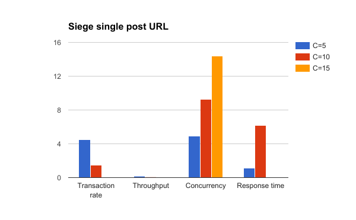
Siege result comparison with concurrency set to 5, 10 and 15
Notice how concurrency rose as our app's performance was dropping. The app was completely dead under siege with
15 concurrent users --- i.e. 15 wild users is all it takes to take your fortress down! We’re engineers, and we’re
not going to cry over challenges, we’re going to solve them!
Keep in mind that these tests are automated, and we’re putting our app under pressure. In reality, users aren’t just
hitting the refresh button like maniacs, they are processing (i.e. reading) the content you present and therefore
some delay between requests exists.
Cache to the Rescue
We’re now aware of some problems with our app --- we’re querying the database too much. Do we really need to get
the list of popular and recent articles from the database on every single request? Probably not, so we can add
a cache layer at the application level (e.g. Redis) and cache a list of popular and recent articles. This article
isn’t about caching (for that, see
this one), so we’re going to a add full response cache for the single post page.
The demo app already comes with
Symfony HTTP Cache enabled, we just need to set the TTL header for the HTTP response we’re returning.
$response->setTtl(60);
Let’s repeat the tests with 5, 10, and 15 concurrent users and see how adding a cache affects the performance. Obviously,
we’re expecting app performance to increase after the cache warms up. We’re also waiting at least 1 minute for
the cache to expire between the tests.
Note: Be careful with caching, especially IRT protected areas of a web app (
oops example) and always remember that it's
one of the two hard things about computer science.
On to results: by adding 60s of cache, the app's stability and performance improved dramatically. Take a look
at the results in the table and charts below.
| C=5 |
C=10 |
C=15 |
| Transactions |
4566 hits |
8323 hits |
12064 hits |
| Availability |
100.00 % |
100.00 % |
100.00 % |
| Elapsed time |
299.86 secs |
299.06 secs |
299.35 secs |
| Data transferred |
175.62 MB |
320.42 MB |
463.78 MB |
| Response time |
0.31 secs |
0.34 secs |
0.35 secs |
| Transaction rate |
15.23 trans/sec |
27.83 trans/sec |
40.30 trans/sec |
| Throughput |
0.59 MB/sec |
1.07 MB/sec |
1.55 MB/sec |
| Concurrency |
4.74 |
9.51 |
14.31 |
| Successful transactions |
4566 |
8323 |
12064 |
| Failed transactions |
0 |
0 |
0 |
| Longest transaction |
4.32 |
5.73 |
4.93 |
Siege of a single post URL with HTTP cache ttl set to 60 seconds
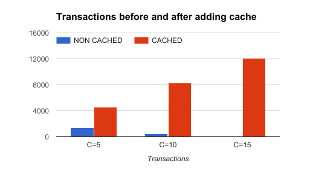
The application was able to handle way more transactions with cache
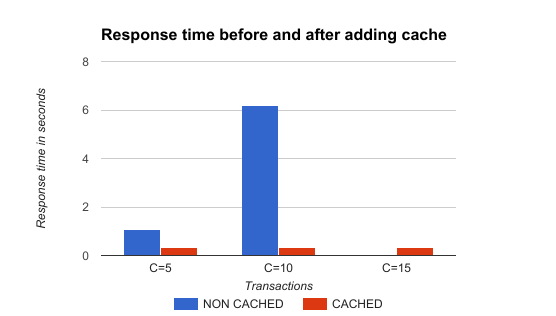
The response time after adding cache was decreased and stable regardless of traffic, as expected
The Real Feel
If you want to get the real feel of using your app when it is under pressure, you can run Siege and use your app
in the browser. Siege will put the app under pressure, and you’ll be able to the actual user experience. Even
though this is a subjective method, I think it’s an eye-opening experience for a majority of developers. Try
it.
Siege isn’t the only tool for load testing and benchmarking of web apps. Let’s quickly test the app with ab.
Ab
ab or
Apache HTTP server benchmarking tool is another great tool. It is well documented and has lots of options,
though it doesn’t support using URL files, parsing, and requesting referenced assets, nor random delays like
Siege does.
If I run ab against single post page (without cache), the result is:
ab -c 5 -t 300 http://sfdemo.loc/en/blog/posts/vero-iusto-fugit-sed-totam.
This is ApacheBench, Version 2.3 <$Revision: 1706008 $>
Copyright 1996 Adam Twiss, Zeus Technology Ltd, http://www.zeustech.net/
Licensed to The Apache Software Foundation, http://www.apache.org/
Benchmarking sfdemo.loc (be patient)
Finished 132 requests
Server Software: Apache/2.4.18
Server Hostname: sfdemo.loc
Server Port: 80
Document Path: /en/blog/posts/vero-iusto-fugit-sed-totam.
Document Length: 23291 bytes
Concurrency Level: 5
Time taken for tests: 300.553 seconds
Complete requests: 132
Failed requests: 0
Total transferred: 3156000 bytes
HTML transferred: 3116985 bytes
Requests per second: 0.44 [#/sec] (mean)
Time per request: 11384.602 [ms] (mean)
Time per request: 2276.920 [ms] (mean, across all concurrent requests)
Transfer rate: 10.25 [Kbytes/sec] received
Connection Times (ms)
min mean[+/-sd] median max
Connect: 81 85 2.0 85 91
Processing: 9376 11038 1085.1 10627 13217
Waiting: 9290 10953 1084.7 10542 13132
Total: 9463 11123 1085.7 10712 13305
Percentage of the requests served within a certain time (ms)
50% 10712
66% 11465
75% 12150
80% 12203
90% 12791
95% 13166
98% 13302
99% 13303
100% 13305 (longest request)
And after we turn cache on, the result is:
ab -c 5 -t 300 http://sfdemo.loc/en/blog/posts/vero-iusto-fugit-sed-totam.
This is ApacheBench, Version 2.3 <$Revision: 1706008 $>
Copyright 1996 Adam Twiss, Zeus Technology Ltd, http://www.zeustech.net/
Licensed to The Apache Software Foundation, http://www.apache.org/
Benchmarking sfdemo.loc (be patient)
Completed 5000 requests
Finished 5373 requests
Server Software: Apache/2.4.18
Server Hostname: sfdemo.loc
Server Port: 80
Document Path: /en/blog/posts/vero-iusto-fugit-sed-totam.
Document Length: 23351 bytes
Concurrency Level: 5
Time taken for tests: 300.024 seconds
Complete requests: 5373
Failed requests: 0
Total transferred: 127278409 bytes
HTML transferred: 125479068 bytes
Requests per second: 17.91 [#/sec] (mean)
Time per request: 279.196 [ms] (mean)
Time per request: 55.839 [ms] (mean, across all concurrent requests)
Transfer rate: 414.28 [Kbytes/sec] received
Connection Times (ms)
min mean[+/-sd] median max
Connect: 81 85 2.1 85 106
Processing: 164 194 434.8 174 13716
Waiting: 83 109 434.8 89 13632
Total: 245 279 434.8 259 13803
Percentage of the requests served within a certain time (ms)
50% 259
66% 262
75% 263
80% 265
90% 268
95% 269
98% 272
99% 278
100% 13803 (longest request)
I love the way ab shows the timing breakdown and stats in the report! I can immediately see that 50% of our requests
were served under 259ms (vs 10.712ms without cache) and 99% of them were under 278ms (vs 13.305ms without cache)
which is acceptable. �Again, the test results are evaluated within their context and relative to the previous
state.
Advanced Load Testing with Siege
Now that we have the basics of load and regression testing covered, it is time to take the next step. So far, we
were hitting single URLs with generated requests, and we saw that once the response is cached, our app can handle
lots of traffic with ease.
In real life, things are a bit more complex: users randomly navigate through the site, visiting URLs and processing
the content. The thing I love the most about Siege is the possibility of using a URL file into which I can place
multiple URLs to be randomly used during the test.
Step 1: Plan the Test
We need to conduct the relevant test on a list of top URLs visited by our users. The second thing we should consider
is the dynamic of users’ behavior --- i.e. how fast they click links.
I would create a URL file based on data from my analytics tool or server access log file. One could use access log
parsing tools such as
Web server access Log Parser to parse Apache access logs, and generate a list of URLs sorted by popularity.
I would take the top N (20, 50, 100 …) URLs and place them in the file. If some of the URLs (e.g. landing page
or viral article) are visited more often than others, we should adjust the probabilities so that siege requests
those URLs more often.
Let say we have following URLs with these visit counts over the last N days:
- Landing page / Home page - 30.000
- Article A - 10.000
- Article B - 2.000
- Article C - 50.000
- About us - 3.000
We can normalize the visits count and get a list like this:
- Landing page / Home page - 32% (30.000 / 95.000)
- Article A - 11% (10.000 / 95.000)
- Article B - 2% (2.000 / 95.000)
- Article C - 52% (50.000 / 95.000)
- About us - 3% (3.000 / 95.000)
Now we can create a URL file with 100 URLs (lines) with 32 x Homepage URLs, 52 x Article C URLs etc. You can shuffle
the final file to get more randomness, and save it.
Take the average session time and pages per session from your analytics tool to calculate the average delay between
two requests. If average session duration is 2 minutes and users are visiting 8 pages per session on average,
simple math gives us an average delay of 15 seconds (120 seconds / 8 pages = 15 seconds / page).
Finally, we disable parsing and requesting of assets as I am caching static files in production and serving them
from a different server. As mentioned above, the parser is turned off by setting
parser = false in Siege's config located at
~/.siege/siege.conf
Step 2: Prepare and Run Tests
Since we’re now dealing with randomness, it would be a good idea to increase the duration of test so that we get
more relevant results. I will be running Siege for 20 minutes with a maximum delay set to 15 seconds and 50 concurrent
users. I will test the blog homepage and 10 articles with different probabilities.
Since I don’t expect that amount of traffic to hit the app with an empty cache, I will warm up the app’s cache by
requesting every URL at least once before testing with
siege -b --file=urls.txt -t 30S -c 1
Now we’re ready to put our app under some serious pressure. If we use the
--internet switch, Siege will select URL from the file randomly. Without the switch, Siege is selecting
URLs sequentially. Let’s start:
siege --file=urls.txt --internet --delay=15 -c 50 -t 30M
Lifting the server siege...
Transactions: 10931 hits
Availability: 98.63 %
Elapsed time: 1799.88 secs
Data transferred: 351.76 MB
Response time: 0.67 secs
Transaction rate: 6.07 trans/sec
Throughput: 0.20 MB/sec
Concurrency: 4.08
Successful transactions: 10931
Failed transactions: 152
Longest transaction: 17.71
Shortest transaction: 0.24
Or with 60 concurrent users during the siege:
siege --file=urls.txt --delay=15 -c 60 -t 30M
Transactions: 12949 hits
Availability: 98.10 %
Elapsed time: 1799.20 secs
Data transferred: 418.04 MB
Response time: 0.69 secs
Transaction rate: 7.20 trans/sec
Throughput: 0.23 MB/sec
Concurrency: 4.99
Successful transactions: 12949
Failed transactions: 251
Longest transaction: 15.75
Shortest transaction: 0.21
We can see that the modified Symfony Demo app (with cache turned on) handled tests pretty well. On average, it was
able to serve
7.2 requests per second within
0.7 seconds (note that we’re using a single core Digital Ocean droplet with only 512 MB of RAM). The
availability was
98.10% due to 251 out of 13.200 requests having failed (the connection with the DB failed a few times).
Submitting Data with Siege
So far we’ve been sending only HTTP GET requests, which is usually enough to get an overview of an app’s performance.
Often, it makes sense to submit data during load tests (e.g. testing API endpoints). With Siege, you can easily
send data to your endpoint:
siege --reps=1 -c 1 'http://sfdemo.loc POST foo=bar&baz=bash'
You can also send the data in JSON format. By using
--content-type parameter, we can specify the content type of a request.
siege --reps=1 -c 1 --content-type="application/json" 'http://sfdemo.loc POST {"foo":"bar","baz":"bash"}'
We can also change the default user agent with
--user-agent="MY USER AGENT" or specify multiple HTTP headers with
--header="MY HEADER VALUE".
Siege also can read the payload data from a file:
cat payload.json
{
"foo":"bar",
"baz":"bash"
}
siege --reps=1 -c 1 --content-type="application/json" ⤶
'http://sfdemo.loc POST < payload.json'
You can also send cookies within tests by using the
--header option:
siege --reps=1 -c 1 --content-type="application/json" ⤶
--header="Cookie: my_cookie=abc123" 'http://sfdemo.loc POST < payload.json'
Conclusion
Siege is a very powerful tool when it comes to load, stress, and regression testing of a web app. There are plenty
of options you can use to make your tests behave as close as possible to a real life environment, which makes
Siege my preferred tool over something like ab. You can combine different options Siege provides and even run
multiple Siege processes in parallel if you want to test your app thoroughly.
It’s always a good idea to automate the testing process (a simple bash script will do the job) and visualize the
results. I usually run multiple Siege processes in parallel testing read-only endpoints (i.e. sending only GET
requests) at a high rate and submitting the data (i.e. posting comments, invalidating the cache, etc.) at a lower
rate, according to real life ratios. Since you can’t specify dynamic payloads within one Siege test, you can
set a bigger delay between two requests and run more Siege commands with different parameters.
I’m also thinking about adding simple load testing to my CI pipeline just to make sure my app’s performance wouldn’t
drop below an acceptable level for critical endpoints.